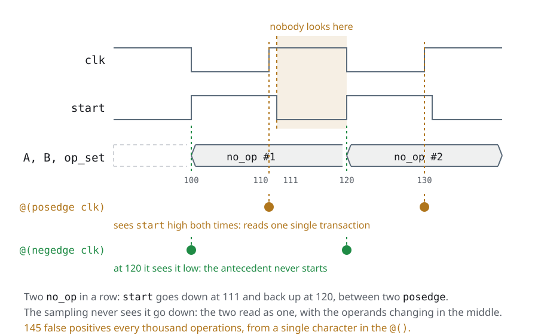

Day 7The other half, and the wrap-up
The same slides as the deck, with the instructor notes inside the text and the complete code. If you are taking the course on your own, start here and keep the deck alongside for the reviews.
Yesterday we left…
Where the testbench stands
- The testbench was left complete and reusable: agents with
is_active, the analysis in theenv, and the stimulus outside the tree, in sequences - No line of the test names a component from inside the
env: the last one went with thedefault_sequencethroughuvm_config_db - And the other half of the verification plan is missing: the rows no scoreboard can close, because they are not about the result but about the protocol
The day 7 recap works as a hinge, and it is worth saying the two things it is made of: this morning UVM gets closed —the virtual sequence is the last piece, and with it the testbench of the course is whole— and this afternoon opens what UVM does not solve, which is the other half of the plan. The third bullet is the arc planted on day 1 with the verification plan and left open on purpose: the scoreboard checks what, the assertion checks how. Today it closes.
Agenda
Day 7 · ≈ 5 h 15 · unit 8 · the other half
- Warm-up: five seeds and a merge, with
make regresion - Virtual sequences: the last piece of the reusable testbench
- Assertions (SVA)
- The capstone: an APB testbench, from scratch
- From the VTALU to a real bus
- The debug toolbox · The 21 silent traps
- Glossary, references and wrap-up
And afterwards, day 8: optional, and for whoever has already handed in the capstone
By the end of the day you can:
- Write a property that sees a protocol violation, and say why
--assertis not optional - Coordinate two interfaces from a single virtual sequence
- Hand in a whole testbench for a DUT you have not seen before
The morning has three pieces and the order matters: the seed warm-up is ten
minutes without SystemVerilog and it hooks into the make regresion the capstone
is going to ask for; the virtual sequences close UVM; and SVA opens the other
half of the plan. The afternoon is the capstone.
The third objective is the one the course is worth, and it is honest to put it as
an objective of the day even if the hand-in comes later: in a company format the
capstone is handed in the next day, and in a term it goes to the exam period.
What gets done this afternoon is starting it with the instructor next to you,
which is when it pays off the most.
Exercise · Day 7 · 1 of 2
The same sequence, another seed
cd code/ejercicios/d7-semillas && bash run.sh
- The only exercise of the course without SystemVerilog: what gets written is the regression, six lines of shell
- Run the same test with seeds 1 to 5 and merge the five coverages
with
verilator_coverage --write - It is graded by checking that the merge covers more than the best of the five on its own
It is the last row of the coverage closure table, done, and it is the warm-up
of day 7: ten minutes, zero SystemVerilog, and it leaves in place the
make regresion this afternoon's capstone is going to ask for. It also closes the
arc day 5 opened with the directed case: one fills the bin random cannot reach,
the other accumulates what random does reach, and they do not replace each other.
The detail to underline is why the test sends 25 operations and not
a thousand: with a thousand this does not work. It is measured and it is on the slide "another seed, and
again" — u2/convencional and u7/sequences give 66 out of 76 with any seed, and the merge
too. With 25 the stimulus has not saturated yet and there each seed does cover a
different piece: 41 to 47 bins each, 62 for the five merged.
The rule they take away, in one line: another seed accumulates while the
stimulus has not saturated, and reproduces an intermittent failure. It does not fill a bin the
stimulus cannot reach.
And the merge command is worth naming for what it is in the industry:
verilator_coverage --write is here what the ucdb merge is in Questa. A real
regression is a hundred seeds overnight and one single number in the morning.
Virtual sequences
The problem: two interfaces and a single start()
- A virtual sequence is a sequence that does not send items of its own: it only starts other sequences, on several sequencers
- It shows up when the DUT has more than one interface —a configuration bus and a data stream, for example— and the test needs to coordinate them: configure first, then send traffic
- It is called "virtual" because it is not tied to a type of item nor to a sequencer
- The
u7/agentsalready left us the scenario built: two VTALU. There the second agent was passive; with both active there are two sequencers, and something to coordinate full_sequenceis already half a virtual sequence: it sends no items of its own, it only starts others. The only thing it lacks is the second sequencer
First hour of day 7, and that is on purpose. It is the last piece of the reusable
testbench, and it arrives on capstone day because it is the day the student looks
at a new DUT and decides which structure it deserves. The capstone has two
APB slaves, each with its own interface —one driven by the testbench, the other
by a module— and that is the shape of the agents section: one active and one
passive, a single sequencer, and no virtual sequence. This hour is what gives the
student the criterion to decide that instead of guessing it, and what leaves them
the answer written down for the day the second slave is theirs too.
It is worth starting from the problem and not from the syntax, because the syntax is
half a screen: what is hard to understand is why a new class is needed
when full_sequence already composes sequences.
The answer is the one in the last bullet, and it is geometric: a normal sequence
knows one sequencer, the one start() handed it. Anything that wants to talk to
two interfaces needs two handles, and those handles have to come from
somewhere.
The example runs and it is in code/u7/sequences/virtual/: it is the testbench of this
section with two lines changed in the env, and everything else by
reference. It is worth saying before showing the code, because it is half of the
argument: a virtual sequence does not change the structure of the testbench.
Virtual sequences
The virtual sequencer: handles, not items
code/u7/sequences/virtual/tb_classes/virtual_sequencer.svh · #the-handlesclass virtual_sequencer extends uvm_sequencer;
`uvm_component_utils(virtual_sequencer)
sequencer clase_sequencer_h;
sequencer modulo_sequencer_h;
function new(string name, uvm_component parent);
super.new(name, parent);
endfunction : new
endclass : virtual_sequencerel archivo entero, 20 líneas
// The virtual sequencer: it has no queue, it arbitrates no items, it talks to no
// driver. It is a component that exists for two things:
//
// 1. to hold the HANDLES to the real sequencers, somewhere the sequence can
// reach without looking up by string;
// 2. to be a uvm_component, that is, to live in the tree and have a name.
//
// That is why it extends uvm_sequencer WITHOUT parameters: the default item is
// uvm_sequence_item, and none is ever sent.
class virtual_sequencer extends uvm_sequencer;
`uvm_component_utils(virtual_sequencer)
sequencer clase_sequencer_h;
sequencer modulo_sequencer_h;
function new(string name, uvm_component parent);
super.new(name, parent);
endfunction : new
endclass : virtual_sequencercode/u7/sequences/virtual/tb_classes/env.svh · #wiring-the-sequencers // not compile instead of returning null at simulation time.
virtual_sequencer_h.clase_sequencer_h = clase_agent_h.sequencer_h;
virtual_sequencer_h.modulo_sequencer_h = modulo_agent_h.sequencer_h;el archivo entero, 65 líneas
// The env of the Sequences section with TWO changes, and no more:
//
// 1. the second agent is UVM_ACTIVE instead of UVM_PASSIVE;
// 2. there is a virtual_sequencer, and connect_phase hands it the handles of
// the two real sequencers.
//
// The rest --agents, scoreboards, coverage, the config_db scope-- is
// identical. That is the point: a virtual sequence does not change the structure
// of the testbench, it only adds who coordinates it.
class env extends uvm_env;
`uvm_component_utils(env);
vtalu_agent clase_agent_h, modulo_agent_h;
vtalu_agent_config clase_cfg_h, modulo_cfg_h;
scoreboard clase_scoreboard_h, modulo_scoreboard_h;
coverage clase_coverage_h, modulo_coverage_h;
virtual_sequencer virtual_sequencer_h;
function new(string name, uvm_component parent);
super.new(name, parent);
endfunction : new
function void build_phase(uvm_phase phase);
env_config env_config_h;
if (!uvm_config_db#(env_config)::get(this, "", "config", env_config_h))
`uvm_fatal("ENV", "Failed to get env config")
// Both active: each with its own sequencer and driver.
clase_cfg_h = new(.bfm(env_config_h.clase_bfm), .is_active(UVM_ACTIVE));
modulo_cfg_h = new(.bfm(env_config_h.modulo_bfm), .is_active(UVM_ACTIVE));
uvm_config_db#(vtalu_agent_config)::set(this, "clase_agent_h*", "config", clase_cfg_h);
uvm_config_db#(vtalu_agent_config)::set(this, "modulo_agent_h*", "config", modulo_cfg_h);
clase_agent_h = vtalu_agent::type_id::create("clase_agent_h", this);
modulo_agent_h = vtalu_agent::type_id::create("modulo_agent_h", this);
virtual_sequencer_h = virtual_sequencer::type_id::create("virtual_sequencer_h", this);
clase_scoreboard_h = scoreboard::type_id::create("clase_scoreboard_h", this);
modulo_scoreboard_h = scoreboard::type_id::create("modulo_scoreboard_h", this);
clase_coverage_h = coverage::type_id::create("clase_coverage_h", this);
modulo_coverage_h = coverage::type_id::create("modulo_coverage_h", this);
endfunction : build_phase
function void connect_phase(uvm_phase phase);
// The handles are passed HERE and not looked up by string: in connect_phase
// both agents already exist, and if somebody renames a component this does
// not compile instead of returning null at simulation time.
virtual_sequencer_h.clase_sequencer_h = clase_agent_h.sequencer_h;
virtual_sequencer_h.modulo_sequencer_h = modulo_agent_h.sequencer_h;
clase_agent_h.command_ap.connect(clase_scoreboard_h.cmd_f.analysis_export);
clase_agent_h.command_ap.connect(clase_coverage_h.analysis_export);
clase_agent_h.result_ap.connect(clase_scoreboard_h.analysis_export);
modulo_agent_h.command_ap.connect(modulo_scoreboard_h.cmd_f.analysis_export);
modulo_agent_h.command_ap.connect(modulo_coverage_h.analysis_export);
modulo_agent_h.result_ap.connect(modulo_scoreboard_h.analysis_export);
endfunction : connect_phase
endclass : env- It has no queue, it does not arbitrate, it does not talk to any driver. It is a
uvm_componentthat exists in order to hold the handles and to live in the tree with a name - It extends
uvm_sequencerwithout parameterizing it: the default item isuvm_sequence_itemand none ever gets sent - The handles get assigned in the
connect_phase, where the agents already exist
The question that comes up on its own: and why a component, if it is only two pointers?
For two reasons. One, so the sequence reaches it with p_sequencer instead
of looking it up by string. Two, because it has to be in the tree so the test
can start a sequence on top of it: seq.start(env_h.virtual_sequencer_h).
The book resolves the handles with uvm_top.find("*.env_h.sequencer_h"). It still
works —uvm_top is there for compatibility, the current form is
uvm_root::get()— but looking components up by string is fragile: the day
somebody renames the env_h, the find() returns null and the fatal shows up
far from the change. Assigning them in the connect_phase does not compile if the name
changed, which is exactly what one wants.
Virtual sequences
The virtual sequence: p_sequencer and two branches
code/u7/sequences/virtual/tb_classes/coordinada_sequence.svh · #p-sequencerclass coordinada_sequence extends uvm_sequence;
`uvm_object_utils(coordinada_sequence)
`uvm_declare_p_sequencer(virtual_sequencer)el archivo entero, 76 líneas
// THE virtual sequence.
//
// Two things set it apart from every sequence in the Sequences section:
//
// 1. It has NO items of its own. It extends uvm_sequence without parameters
// and never calls start_item(): all it does is start OTHER sequences.
// Hence "virtual" -- it is tied to no item type and no sequencer.
// 2. It runs on more than one sequencer, and that is where the one thing no
// single sequence can do comes from: coordinating two interfaces.
//
// `uvm_declare_p_sequencer declares `p_sequencer` with the type above and casts
// it on its own inside m_set_p_sequencer. Without it, get_sequencer() returns a
// uvm_sequencer_base and every use would need a cast by hand.
class coordinada_sequence extends uvm_sequence;
`uvm_object_utils(coordinada_sequence)
`uvm_declare_p_sequencer(virtual_sequencer)
int unsigned count = 1000;
function new(string name = "coordinada_sequence");
super.new(name);
endfunction : new
task body();
reset_sequence reset_a, reset_b;
maxmult_sequence maxmult;
random_sequence random_b;
un_op_sequence primera, segunda;
reset_a = reset_sequence::type_id::create("reset_a");
reset_b = reset_sequence::type_id::create("reset_b");
maxmult = maxmult_sequence::type_id::create("maxmult");
random_b = random_sequence::type_id::create("random_b");
primera = un_op_sequence::type_id::create("primera");
segunda = un_op_sequence::type_id::create("segunda");
random_b.count = count;
// --- 1. Both ALUs get reset at the same time -----------------------------
// fork/join over TWO sequencers. Each branch blocks on its own driver, and
// the join waits for both: that cannot be written inside a normal
// sequence, which only knows the sequencer that started it.
fork
reset_a.start(p_sequencer.clase_sequencer_h);
reset_b.start(p_sequencer.modulo_sequencer_h);
join
// --- 2. Parallel traffic, different on each interface -------------------
// A does the directed overflow case while B sends at random.
fork
maxmult.start(p_sequencer.clase_sequencer_h);
random_b.start(p_sequencer.modulo_sequencer_h);
join
// --- 3. What no single sequence can do ----------------------------------
// The result of VTALU A is the operand of B. It is a dependency BETWEEN
// interfaces: the second one cannot even start being built until the
// first one answered.
primera.A = 8'h0F;
primera.B = 8'h07;
primera.op = mul_op;
primera.start(p_sequencer.clase_sequencer_h);
`uvm_info("COORDINADA", $sformatf(
"A returned %0d: it goes as an operand into B", primera.result), UVM_LOW)
segunda.A = primera.result[7:0];
segunda.B = 8'h01;
segunda.op = add_op;
segunda.start(p_sequencer.modulo_sequencer_h);
`uvm_info("COORDINADA", $sformatf(
"B returned %0d", segunda.result), UVM_LOW)
endtask : body
endclass : coordinada_sequencecode/u7/sequences/virtual/tb_classes/coordinada_sequence.svh · #the-fork fork
reset_a.start(p_sequencer.clase_sequencer_h);
reset_b.start(p_sequencer.modulo_sequencer_h);
join
// --- 2. Parallel traffic, different on each interface -------------------
// A does the directed overflow case while B sends at random.
fork
maxmult.start(p_sequencer.clase_sequencer_h);
random_b.start(p_sequencer.modulo_sequencer_h);
joinel archivo entero, 76 líneas
// THE virtual sequence.
//
// Two things set it apart from every sequence in the Sequences section:
//
// 1. It has NO items of its own. It extends uvm_sequence without parameters
// and never calls start_item(): all it does is start OTHER sequences.
// Hence "virtual" -- it is tied to no item type and no sequencer.
// 2. It runs on more than one sequencer, and that is where the one thing no
// single sequence can do comes from: coordinating two interfaces.
//
// `uvm_declare_p_sequencer declares `p_sequencer` with the type above and casts
// it on its own inside m_set_p_sequencer. Without it, get_sequencer() returns a
// uvm_sequencer_base and every use would need a cast by hand.
class coordinada_sequence extends uvm_sequence;
`uvm_object_utils(coordinada_sequence)
`uvm_declare_p_sequencer(virtual_sequencer)
int unsigned count = 1000;
function new(string name = "coordinada_sequence");
super.new(name);
endfunction : new
task body();
reset_sequence reset_a, reset_b;
maxmult_sequence maxmult;
random_sequence random_b;
un_op_sequence primera, segunda;
reset_a = reset_sequence::type_id::create("reset_a");
reset_b = reset_sequence::type_id::create("reset_b");
maxmult = maxmult_sequence::type_id::create("maxmult");
random_b = random_sequence::type_id::create("random_b");
primera = un_op_sequence::type_id::create("primera");
segunda = un_op_sequence::type_id::create("segunda");
random_b.count = count;
// --- 1. Both ALUs get reset at the same time -----------------------------
// fork/join over TWO sequencers. Each branch blocks on its own driver, and
// the join waits for both: that cannot be written inside a normal
// sequence, which only knows the sequencer that started it.
fork
reset_a.start(p_sequencer.clase_sequencer_h);
reset_b.start(p_sequencer.modulo_sequencer_h);
join
// --- 2. Parallel traffic, different on each interface -------------------
// A does the directed overflow case while B sends at random.
fork
maxmult.start(p_sequencer.clase_sequencer_h);
random_b.start(p_sequencer.modulo_sequencer_h);
join
// --- 3. What no single sequence can do ----------------------------------
// The result of VTALU A is the operand of B. It is a dependency BETWEEN
// interfaces: the second one cannot even start being built until the
// first one answered.
primera.A = 8'h0F;
primera.B = 8'h07;
primera.op = mul_op;
primera.start(p_sequencer.clase_sequencer_h);
`uvm_info("COORDINADA", $sformatf(
"A returned %0d: it goes as an operand into B", primera.result), UVM_LOW)
segunda.A = primera.result[7:0];
segunda.B = 8'h01;
segunda.op = add_op;
segunda.start(p_sequencer.modulo_sequencer_h);
`uvm_info("COORDINADA", $sformatf(
"B returned %0d", segunda.result), UVM_LOW)
endtask : body
endclass : coordinada_sequence`uvm_declare_p_sequencerdeclaresp_sequencer**with the type of the virtual sequencer** and casts it on its own. Without it,get_sequencer()returns auvm_sequencer_baseand you have to cast by hand at every use- The
fork/joinis over two sequencers: each branch blocks on its driver and thejoinwaits for both - That cannot be written inside a normal sequence, which knows a single sequencer
The uvm_declare_p_sequencer is sugar, and it is worth saying so: the only thing it does is
declare the variable and redefine m_set_p_sequencer() with the $cast. If the
sequencer it gets started on is not of that type, the fatal fires there and not
twenty lines later.
The detail that gets overlooked: the two branches of the fork start different
sequences on different sequencers. If they were two sequences on the
same sequencer, they would compete for the arbitration and the items would come out
interleaved — which is a legitimate scenario, but it is another one.
And a warning from the field: a virtual sequence with a single sequencer is a
normal sequence with more ceremony. The class is justified when there are two.
Virtual sequences
What no sequence on its own can do
code/u7/sequences/virtual/tb_classes/coordinada_sequence.svh · #the-ordered-pair primera.A = 8'h0F;
primera.B = 8'h07;
primera.op = mul_op;
primera.start(p_sequencer.clase_sequencer_h);
`uvm_info("COORDINADA", $sformatf(
"A returned %0d: it goes as an operand into B", primera.result), UVM_LOW)
segunda.A = primera.result[7:0];
segunda.B = 8'h01;
segunda.op = add_op;
segunda.start(p_sequencer.modulo_sequencer_h);el archivo entero, 76 líneas
// THE virtual sequence.
//
// Two things set it apart from every sequence in the Sequences section:
//
// 1. It has NO items of its own. It extends uvm_sequence without parameters
// and never calls start_item(): all it does is start OTHER sequences.
// Hence "virtual" -- it is tied to no item type and no sequencer.
// 2. It runs on more than one sequencer, and that is where the one thing no
// single sequence can do comes from: coordinating two interfaces.
//
// `uvm_declare_p_sequencer declares `p_sequencer` with the type above and casts
// it on its own inside m_set_p_sequencer. Without it, get_sequencer() returns a
// uvm_sequencer_base and every use would need a cast by hand.
class coordinada_sequence extends uvm_sequence;
`uvm_object_utils(coordinada_sequence)
`uvm_declare_p_sequencer(virtual_sequencer)
int unsigned count = 1000;
function new(string name = "coordinada_sequence");
super.new(name);
endfunction : new
task body();
reset_sequence reset_a, reset_b;
maxmult_sequence maxmult;
random_sequence random_b;
un_op_sequence primera, segunda;
reset_a = reset_sequence::type_id::create("reset_a");
reset_b = reset_sequence::type_id::create("reset_b");
maxmult = maxmult_sequence::type_id::create("maxmult");
random_b = random_sequence::type_id::create("random_b");
primera = un_op_sequence::type_id::create("primera");
segunda = un_op_sequence::type_id::create("segunda");
random_b.count = count;
// --- 1. Both ALUs get reset at the same time -----------------------------
// fork/join over TWO sequencers. Each branch blocks on its own driver, and
// the join waits for both: that cannot be written inside a normal
// sequence, which only knows the sequencer that started it.
fork
reset_a.start(p_sequencer.clase_sequencer_h);
reset_b.start(p_sequencer.modulo_sequencer_h);
join
// --- 2. Parallel traffic, different on each interface -------------------
// A does the directed overflow case while B sends at random.
fork
maxmult.start(p_sequencer.clase_sequencer_h);
random_b.start(p_sequencer.modulo_sequencer_h);
join
// --- 3. What no single sequence can do ----------------------------------
// The result of VTALU A is the operand of B. It is a dependency BETWEEN
// interfaces: the second one cannot even start being built until the
// first one answered.
primera.A = 8'h0F;
primera.B = 8'h07;
primera.op = mul_op;
primera.start(p_sequencer.clase_sequencer_h);
`uvm_info("COORDINADA", $sformatf(
"A returned %0d: it goes as an operand into B", primera.result), UVM_LOW)
segunda.A = primera.result[7:0];
segunda.B = 8'h01;
segunda.op = add_op;
segunda.start(p_sequencer.modulo_sequencer_h);
`uvm_info("COORDINADA", $sformatf(
"B returned %0d", segunda.result), UVM_LOW)
endtask : body
endclass : coordinada_sequence- The result of VTALU A goes in as an operand of B: a dependency between interfaces, and in series. The second one cannot even be assembled until the first has answered
- The
resultcomes back inside the item, which is the way back of this unit 0F × 07 = 105, and B answers106. Run it:code/u7/sequences/virtual/run.sh
This is the slide that justifies the class. The two fork of the previous slide
could be imitated with two tests running in parallel; this one cannot, because there is a piece of data
that crosses from one interface to the other in the middle of the scenario.
It is exactly the shape of the real case the bus appendix promises:
configure over APB, read the status, and only then send traffic over AXI with
what the configuration returned. The protocol changes, not the structure.
And the honest close: the example runs on two VTALU because it is the DUT we
have. With two different interfaces —two transactions, two drivers— the
virtual sequence is written the same: the handles would be of two types of
sequencer, and nothing more.
And the criterion for the afternoon: in the capstone the second slave is driven
by a module, so there is one sequencer and this is not needed. The virtual
sequence comes in the day both interfaces belong to the testbench and one depends
on the other — and then it is written just like here.
Virtual sequences
And if branch B has to wait for A?
// uvm_event: a notice, from one to many. It comes from the global pool, nobody builds it
uvm_event listo = uvm_event_pool::get_global("dut_configurado");
listo.trigger(); // the branch that configured gives notice
listo.wait_trigger(); // the one waiting blocks here
listo.wait_ptrigger(); // the same, but if it already happened, it walks on
// uvm_barrier: a meeting point between N branches
uvm_barrier arranque = uvm_barrier_pool::get_global("arranque");
arranque.set_threshold(2);
arranque.wait_for(); // neither of the two goes on until both have arrived
- The
joinsynchronizes at the end. When branch B has to wait for A in the middle, a synchronization object is needed uvm_eventis one to many: one gives notice, those waiting move on. Andtrigger(data)can carry auvm_objectattacheduvm_barrieris symmetric: nobody goes on until everybody has arrived. It is the "start together" of two agents that have to begin on the same cycle- A shared
bitwithwait(flag)is not enough: it loses the pulse if the one waiting arrived late, and it carries no data
This is the question that shows up on its own as soon as the fork of the previous
slide is drawn, and it is worth answering right there: "and if branch B cannot start
until A configured the DUT?".
The distinction to make clear is one to many versus symmetric. The
uvm_event has a side that gives notice and another that waits, and the roles do not
change: it is for "the reset finished", "the DUT is configured", "the interrupt
arrived". The uvm_barrier has no sides: the N branches execute the same
line and none goes on until all are there. It is for "start together" and for
"everybody wait until the configuration phase ends".
The wait_ptrigger() deserves its own second, because it is the classic race: if
branch A triggers before B reaches the wait_trigger(), B waits
forever. The p is for persistent: it asks whether the event already happened at some point.
The practical rule: if you cannot guarantee the order, wait_ptrigger().
And why not a shared bit, which is the first thing anybody tries: a bit does not
keep history, does not carry attached data, and cannot be reset between phases without
somebody swallowing a pulse. The two UVM objects exist precisely because
that homemade version fails once every hundred runs.
Its own failure mode: a barrier with the threshold set wrong does not give an error —
it hangs. The symptom is a test that ends on +UVM_TIMEOUT without a single
UVM_ERROR, and +UVM_OBJECTION_TRACE shows the objection up and nobody
moving on.
Assertions (SVA)
The hole the scoreboard left
- The scoreboard of this course checks the result:
A op Bagainst what the DUT gave back. A thousand operations, a thousand comparisons, zero errors - Nobody checks the protocol. A DUT that gives back the right
resultbut dropsdoneone cycle early, or raises it on ano_op, passes every test of the course - The rule of the protocol is written in three places: in prose in the spec, inside the BFM, and in the head of whoever wrote it. In none of the three is it checked
- An assertion is that same sentence, in executable form, running on its own the whole simulation
It is worth opening the section with the question and leaving it hanging for half a minute: which
part of the testbench would notice if the DUT raised done two cycles early?
The honest answer is none, and it comes as a surprise, because by this point the testbench
already has a scoreboard, coverage, two agents and sequences.
The reason is structural, not an oversight: the scoreboard receives transactions, which
is precisely what is left after erasing the protocol. The monitor erases it
in the analysis ports and it does well: that is what makes the scoreboard not know
that a clk exists. The price is that the layer that sees the wires —the interface— is
the only one that can check them, and until today it only moved them.
This is also the answer to "why is SVA the other half of
verification?": it is not another technique for doing the same thing, it is the half this
testbench does not cover.
Assertions (SVA)
Immediate and concurrent: the one you know and the new one
// IMMEDIATE: it is a STATEMENT. It runs when the thread goes past it,
// once, and that is all. The one from the transactions is of this family.
assert (cmd.op inside {add_op, sub_op, and_op, xor_op, mul_op})
else `uvm_error("SEQ", "invalid operation");
// CONCURRENT -- the new thing. It is a DECLARATION with a clock: it gets
// plugged in when the simulation starts and evaluated on every edge, forever.
a_done : assert property (@(posedge clk) start |=> ##[0:4] done);
- The immediate one lives inside a
begin/end, it is procedural, and it only exists while the thread is standing there - The concurrent one lives in no thread: it is a declaration, like an
always. It gets written once and checks every edge of the whole simulation - That is why a concurrent one can describe something that lasts several cycles, and an immediate one cannot
The distinction is hard at first and it is worth anchoring it with the RTL analogy:
an immediate one is to an if what a concurrent one is to an always_ff. The
first executes; the second gets instantiated.
The practical consequence is the one that matters: the immediate one can only look at the
present —the value of a variable at that instant—, while the concurrent one
has a time axis of its own and can say "if this happens, three cycles later
that has to happen". No amount of if writes that sentence without
inventing state machines by hand.
And the hook back to the transactions: assert(x.randomize()) is an immediate one, and there
is the silent trap of that section —assert is a simulation directive, and
with asserts switched off the argument does not get executed. Here you see why: they are the
same keyword for two different things.
Assertions (SVA)
Anatomy of a property
a_done_llega : // <- the label: NOT optional
assert property (
@(posedge clk) // <- the clock: when it gets sampled
disable iff (!reset_n) // <- when NOT to check
start && (op_set != no_op) // <- the antecedent
|-> // <- the implication
##[1:5] done // <- the consequent
) else `uvm_error("SVA", "..."); // <- what to do if it fails
- It reads like a sentence: "on every edge of
clk, as long as there is no reset, ifstartis up with a real operation, thendonearrives within five cycles" - The label comes out in the error message and in the coverage report. A property without a label is an anonymous error at three in the morning
- The seven parts are always the same. The rest of the section is learning what can go in each one
It is worth writing this slide on the blackboard as a template and going back to it every
time a new property comes up: the student who gets lost in SVA almost always
gets lost because they do not tell the antecedent from the consequent.
The label deserves a paragraph of its own. Without it, the simulator invents one
(__unnamed$$_0), and that name is the one that is going to show up in the log of the nightly
regression and in the assertion coverage report. It is exactly the same
argument as the begin : nombre the course has been using since interfaces and BFM.
The disable iff is looked at in detail further on, but it is worth getting ahead of why it is
so high up in the template: it is the part that gets forgotten most and the one that generates the most false
positives.
Assertions (SVA)
|-> against |=>, mistake number one
// |-> overlapping: the consequent starts on THE SAME edge
a : assert property (@(posedge clk) start |-> !done);
// |=> non-overlapping: the consequent starts on the NEXT edge
b : assert property (@(posedge clk) start |=> !done);
a |=> bis exactlya |-> ##1 b. There is no more mystery than that- Which one goes in? It depends on whether the response is combinational (the same edge) or
registered (the next one). In the VTALU,
donecomes out of analways_ff: it is always the next one - Getting it wrong does not have a single symptom:
start |-> donewith a registereddonefails on every transaction —it sees the olddone—, and a property whose antecedent never occurs passes vacuously. That is why it always goes with itscover
This is the first question of every SVA interview and it is worth practising it
with the DUT in hand: done_1c <= start && (op != 3'b000) is an NBA, so
what gets written on edge n is only read on n+1. With |-> the
property would compare start against the old done.
The operational rule, which is more useful than the theory: |=> is |-> ##1, so
the question is not which of the two operators goes in but how many edges later the
spec promises it. An assign answers on the same edge and a <= on the next one, but
that is the easy case: the star property of this very section —start && op_set != no_op |-> ##[1:5] done— uses |-> for a done that comes out of an always_ff,
because the spec promises a window of one to five edges and not a single one.
And the trap to name out loud, without overstating it: getting this wrong sometimes
shouts —|-> against a registered signal fails on every transaction— and sometimes
stays quiet, when the antecedent you wrote never occurs and the property is vacuously
satisfied. That second case is the one the final report takes as good, and it is the
reason why the cover property slide is not an extra: it is the only check of the
check.
Assertions (SVA)
Looking at the past: $rose, $fell, $stable, $past
$rose(start) // 0 -> 1 between the previous edge and this one
$fell(done) // 1 -> 0
$stable(A) // the value is the same as on the previous edge
$past(result, 3) // the value it had 3 edges ago
- The four of them compare against the previous sample, not against the previous instant. In SVA time is counted in edges of the property's clock, not in nanoseconds
$stableis the one that writes "it was not touched", which is half a library of protocol rules$past(x, n)is a free delay line: it is good for checking a fixed latency without writing a state machine
Careful with $rose on a signal that moves on the same edge the property
samples: it is not going to see it go up on that edge, it is going to see it go up on the next one.
That is exactly the topic of the slide that follows, and it is worth planting it here.
$past with the second argument is the one that gets underestimated the most: checking "the
result of now corresponds to the operands of four edges ago" is one
line, and by hand it is a shift register and three bugs.
It is worth saying as well where they can be used, because there is a half-truth going
around: they can be called from procedural code —an always @(posedge clk) if ($rose(req)) … is legal (1800-2017 §16.9.3) and Verilator 5.052 accepts it—, because
that is where they infer the clock from. What they always need is a clock: in an
initial with no clock event they mean nothing. And the practical limit of this flow:
$past with the explicit clock argument is not supported by Verilator (Unsupported:
$past expr2 and/or clock arguments).
Assertions (SVA)
The property that is worth the section
code/u8/assertions/vtalu_bfm.sv · #stable-operands // --- The stimulus ---
// The rule from slide 1 of day 1, executable at last: while start is up, the
// operands and the operation are not touched.
property p_operandos_estables;
@(negedge clk) start |=> $stable(A) && $stable(B) && $stable(op_set);
endproperty : p_operandos_estables
a_operandos_estables :
assert property (p_operandos_estables)
else
`uvm_error("SVA", $sformatf(
"%m: operand changed with start up: A=%0d B=%0d op=%s", A, B, op2enum().name()))el archivo entero, 217 líneas
interface vtalu_bfm;
import uvm_pkg::*;
import vtalu_pkg::*;
`include "uvm_macros.svh"
byte unsigned A;
byte unsigned B;
bit clk;
bit reset_n;
bit start;
wire done;
wire [15:0] result;
wire ovf;
operation_t op_set;
command_monitor command_monitor_h;
function operation_t op2enum();
case (op_set)
3'b000: return no_op;
3'b001: return add_op;
3'b010: return sub_op;
3'b011: return and_op;
3'b100: return xor_op;
3'b101: return mul_op;
default: $fatal(1, "Illegal operation on op bus");
endcase // case (op_set)
endfunction : op2enum
always @(posedge clk) begin : op_monitor
static bit in_command = 0;
// The null guard rst_monitor already had, now here too. With two BFMs in
// the top, one can be left without a monitor while the testbench is being
// built -- or forever, if someone forgets to instantiate the passive
// agent. Without the guard that is a simulator crash instead of a
// testbench that sees nothing.
if (command_monitor_h != null) begin : con_monitor
if (start) begin : start_high
if (!in_command) begin : new_command
command_monitor_h.write_to_monitor(A, B, op2enum());
in_command = (op2enum() != no_op);
end : new_command
end : start_high
else // start low
in_command = 0;
end : con_monitor
end : op_monitor
always @(negedge reset_n) begin : rst_monitor
if (command_monitor_h != null) //guard against VCS time 0 negedge
command_monitor_h.write_to_monitor(A, B, rst_op);
end : rst_monitor
result_monitor result_monitor_h;
initial begin : result_monitor_thread
forever begin : result_monitor
@(posedge clk);
// Same guard as op_monitor and rst_monitor: with two BFMs in the top,
// one can be left without a monitor. Without this, forgetting the
// passive agent is a simulator "Null pointer dereferenced" instead of
// the checker's message -- which is exactly where exercise d6 starts.
if (done && result_monitor_h != null) result_monitor_h.write_to_monitor(result, ovf);
end : result_monitor
end : result_monitor_thread
initial begin
clk = 0;
forever begin
#10;
clk = ~clk;
end
end
// --- the protocol, in the BFM ---
// Everything that knows HOW the DUT is talked to lives here, in one place:
// the rest of the testbench asks for an operation and never touches a wire.
// That is the idea of the interfaces-and-BFM section, and it holds to the end of the course.
task reset_alu();
reset_n = 1'b0;
@(negedge clk);
@(negedge clk);
reset_n = 1'b1;
start = 1'b0;
endtask : reset_alu
// NEW with the sequences: the fourth argument. The protocol did not change; the only
// thing added is reading result on the edge where done is already up.
bit bug_operandos;
initial bug_operandos = $test$plusargs("BUG");
task send_op(input byte iA, input byte iB, input operation_t iop,
output shortint unsigned oresult);
oresult = 0;
if (iop == rst_op) begin
@(posedge clk);
reset_n = 1'b0;
start = 1'b0;
@(posedge clk);
#1;
reset_n = 1'b1;
end else begin
@(negedge clk);
op_set = iop;
A = iA;
B = iB;
start = 1'b1;
if (iop == no_op) begin
@(posedge clk);
#1;
start = 1'b0;
end else begin
// +BUG=1: changes B halfway through the multiplication. The
// multiplier already latched A and B on the first edge, so the
// RESULT DOES NOT CHANGE: the scoreboard stays green. The only
// thing that sees it is the assertion. That is the whole section.
if (bug_operandos && iop == mul_op) begin
@(negedge clk);
@(negedge clk);
B = ~iB;
end
do @(negedge clk); while (done == 0);
oresult = result;
start = 1'b0;
end
end // else: !if(iop == rst_op)
endtask : send_op
// ==========================================================================
// The protocol, checked where it happens
// ==========================================================================
//
// The properties live HERE, with the signals, and not in the testbench: they
// plug themselves in, nobody connects them, and the passive agent of the Agents
// section gets them for free. All they need in order to run is --assert.
//
// TWO CLOCKS, and it is not an implementation detail: the BFM drives on
// negedge and the DUT registers on posedge. An assertion samples in the
// preponed region of the edge it is given, so a signal written ON the negedge
// is not seen on that negedge: it is seen on the next one. With everything on
// posedge, two consecutive no_op -- start goes down at t=111 and back up at
// t=120, between two posedges -- read as ONE transaction with the operands
// changing: 145 false positives every 1000 operations. With everything on
// negedge, the false positives move to the done properties.
//
// stimulus (start, A, B, op_set) -> negedge, where the BFM writes
// response (done, result) -> posedge, where the DUT registers
default disable iff (!reset_n);
// --- The stimulus ---
// The rule from slide 1 of day 1, executable at last: while start is up, the
// operands and the operation are not touched.
property p_operandos_estables;
@(negedge clk) start |=> $stable(A) && $stable(B) && $stable(op_set);
endproperty : p_operandos_estables
a_operandos_estables :
assert property (p_operandos_estables)
else
`uvm_error("SVA", $sformatf(
"%m: operand changed with start up: A=%0d B=%0d op=%s", A, B, op2enum().name()))
// --- The DUT's answer ---
// The variable latency from the VTALU spec section, in one line: one cycle for the
// one-cycle ops, four edges for the multiplication.
property p_done_llega;
@(posedge clk) start && (op_set != no_op) |-> ##[1:5] done;
endproperty : p_done_llega
a_done_llega :
assert property (p_done_llega)
else `uvm_error("SVA", $sformatf("%m: start con op=%s y done no llego en 5 ciclos", op2enum().name()))
// The fine print: no_op is the only operation that does not answer.
property p_no_op_sin_done;
@(posedge clk) start && (op_set == no_op) |=> !done;
endproperty : p_no_op_sin_done
a_no_op_sin_done :
assert property (p_no_op_sin_done)
else `uvm_error("SVA", $sformatf("%m: done subio para una no_op"))
// --- Every assertion comes with its cover property ---
//
// An assertion whose antecedent never happens PASSES, and checks nothing.
// The cover is the antidote. And it also debunks mental models: the
// "three-cycle" multiplication takes FOUR edges (done3 -> done2 ->
// done1 -> done_mult), so c_mult_3ciclos stays at 0 forever.
// --- VTALU rev2: the output the scoreboard only glances at ---
// ovf belongs to sub and to nobody else. An assertion, because it is a rule of
// the spec and not arithmetic: the scoreboard checks WHAT it computes, this
// checks that it does not invent a flag where none belongs.
property p_ovf_solo_en_sub;
@(posedge clk) done && (op_set != sub_op) |-> !ovf;
endproperty : p_ovf_solo_en_sub
a_ovf_solo_en_sub :
assert property (p_ovf_solo_en_sub)
else `uvm_error("SVA", $sformatf("%m: ovf arriba con op=%s, que no puede desbordar", op2enum().name()))
// And the cover that goes with it: without this, a regression where the random
// never subtracted too much leaves the assertion green having checked nothing.
c_ovf : cover property (@(posedge clk) done && ovf);
c_sub_sin_borrow : cover property (@(posedge clk) done && (op_set == sub_op) && !ovf);
c_mult_3ciclos : cover property (@(posedge clk) $rose(start) && (op_set == mul_op) ##3 done);
c_mult_4ciclos : cover property (@(posedge clk) $rose(start) && (op_set == mul_op) ##4 done);
c_un_ciclo : cover property (@(posedge clk) $rose(start) && (op_set inside {add_op, sub_op, and_op, xor_op}) ##1 done);
endinterface : vtalu_bfm- It is the rule of slide 1 of day 1: while
startis up, the operands are not touched. It sat written in prose for six days - Eleven lines, and they check every transaction of every test, on both agents, without anybody connecting them to anything
- The scoreboard cannot write this rule: by the time the transaction reaches it, the protocol has already been erased
This is the moment to go back to the spec slide and read it word for word.
The distance between "the operands must remain stable while start
is active" and the line of SVA on screen is almost zero — and that is the whole
argument for why assertions get written early and not at the end: the
specification is already written, it only has to be translated.
The $stable(op_set) at the end is the one that tends to be missing and it is the one that catches the ugliest
bug: changing the operation halfway through a transaction is legal for the compiler,
illegal for the DUT and transparent for the scoreboard.
It is worth showing the @(negedge clk) and not explaining it yet: leave it as a
curiosity that gets cleared up on the next slide. Somebody is going to ask first.
Assertions (SVA)
⚠ Two clocks: an assertion is worth what its sampling is worth
code/u8/assertions/vtalu_bfm.sv · #two-clocks // TWO CLOCKS, and it is not an implementation detail: the BFM drives on
// negedge and the DUT registers on posedge. An assertion samples in the
// preponed region of the edge it is given, so a signal written ON the negedge
// is not seen on that negedge: it is seen on the next one. With everything on
// posedge, two consecutive no_op -- start goes down at t=111 and back up at
// t=120, between two posedges -- read as ONE transaction with the operands
// changing: 145 false positives every 1000 operations. With everything on
// negedge, the false positives move to the done properties.
//
// stimulus (start, A, B, op_set) -> negedge, where the BFM writes
// response (done, result) -> posedge, where the DUT registers
default disable iff (!reset_n);el archivo entero, 217 líneas
interface vtalu_bfm;
import uvm_pkg::*;
import vtalu_pkg::*;
`include "uvm_macros.svh"
byte unsigned A;
byte unsigned B;
bit clk;
bit reset_n;
bit start;
wire done;
wire [15:0] result;
wire ovf;
operation_t op_set;
command_monitor command_monitor_h;
function operation_t op2enum();
case (op_set)
3'b000: return no_op;
3'b001: return add_op;
3'b010: return sub_op;
3'b011: return and_op;
3'b100: return xor_op;
3'b101: return mul_op;
default: $fatal(1, "Illegal operation on op bus");
endcase // case (op_set)
endfunction : op2enum
always @(posedge clk) begin : op_monitor
static bit in_command = 0;
// The null guard rst_monitor already had, now here too. With two BFMs in
// the top, one can be left without a monitor while the testbench is being
// built -- or forever, if someone forgets to instantiate the passive
// agent. Without the guard that is a simulator crash instead of a
// testbench that sees nothing.
if (command_monitor_h != null) begin : con_monitor
if (start) begin : start_high
if (!in_command) begin : new_command
command_monitor_h.write_to_monitor(A, B, op2enum());
in_command = (op2enum() != no_op);
end : new_command
end : start_high
else // start low
in_command = 0;
end : con_monitor
end : op_monitor
always @(negedge reset_n) begin : rst_monitor
if (command_monitor_h != null) //guard against VCS time 0 negedge
command_monitor_h.write_to_monitor(A, B, rst_op);
end : rst_monitor
result_monitor result_monitor_h;
initial begin : result_monitor_thread
forever begin : result_monitor
@(posedge clk);
// Same guard as op_monitor and rst_monitor: with two BFMs in the top,
// one can be left without a monitor. Without this, forgetting the
// passive agent is a simulator "Null pointer dereferenced" instead of
// the checker's message -- which is exactly where exercise d6 starts.
if (done && result_monitor_h != null) result_monitor_h.write_to_monitor(result, ovf);
end : result_monitor
end : result_monitor_thread
initial begin
clk = 0;
forever begin
#10;
clk = ~clk;
end
end
// --- the protocol, in the BFM ---
// Everything that knows HOW the DUT is talked to lives here, in one place:
// the rest of the testbench asks for an operation and never touches a wire.
// That is the idea of the interfaces-and-BFM section, and it holds to the end of the course.
task reset_alu();
reset_n = 1'b0;
@(negedge clk);
@(negedge clk);
reset_n = 1'b1;
start = 1'b0;
endtask : reset_alu
// NEW with the sequences: the fourth argument. The protocol did not change; the only
// thing added is reading result on the edge where done is already up.
bit bug_operandos;
initial bug_operandos = $test$plusargs("BUG");
task send_op(input byte iA, input byte iB, input operation_t iop,
output shortint unsigned oresult);
oresult = 0;
if (iop == rst_op) begin
@(posedge clk);
reset_n = 1'b0;
start = 1'b0;
@(posedge clk);
#1;
reset_n = 1'b1;
end else begin
@(negedge clk);
op_set = iop;
A = iA;
B = iB;
start = 1'b1;
if (iop == no_op) begin
@(posedge clk);
#1;
start = 1'b0;
end else begin
// +BUG=1: changes B halfway through the multiplication. The
// multiplier already latched A and B on the first edge, so the
// RESULT DOES NOT CHANGE: the scoreboard stays green. The only
// thing that sees it is the assertion. That is the whole section.
if (bug_operandos && iop == mul_op) begin
@(negedge clk);
@(negedge clk);
B = ~iB;
end
do @(negedge clk); while (done == 0);
oresult = result;
start = 1'b0;
end
end // else: !if(iop == rst_op)
endtask : send_op
// ==========================================================================
// The protocol, checked where it happens
// ==========================================================================
//
// The properties live HERE, with the signals, and not in the testbench: they
// plug themselves in, nobody connects them, and the passive agent of the Agents
// section gets them for free. All they need in order to run is --assert.
//
// TWO CLOCKS, and it is not an implementation detail: the BFM drives on
// negedge and the DUT registers on posedge. An assertion samples in the
// preponed region of the edge it is given, so a signal written ON the negedge
// is not seen on that negedge: it is seen on the next one. With everything on
// posedge, two consecutive no_op -- start goes down at t=111 and back up at
// t=120, between two posedges -- read as ONE transaction with the operands
// changing: 145 false positives every 1000 operations. With everything on
// negedge, the false positives move to the done properties.
//
// stimulus (start, A, B, op_set) -> negedge, where the BFM writes
// response (done, result) -> posedge, where the DUT registers
default disable iff (!reset_n);
// --- The stimulus ---
// The rule from slide 1 of day 1, executable at last: while start is up, the
// operands and the operation are not touched.
property p_operandos_estables;
@(negedge clk) start |=> $stable(A) && $stable(B) && $stable(op_set);
endproperty : p_operandos_estables
a_operandos_estables :
assert property (p_operandos_estables)
else
`uvm_error("SVA", $sformatf(
"%m: operand changed with start up: A=%0d B=%0d op=%s", A, B, op2enum().name()))
// --- The DUT's answer ---
// The variable latency from the VTALU spec section, in one line: one cycle for the
// one-cycle ops, four edges for the multiplication.
property p_done_llega;
@(posedge clk) start && (op_set != no_op) |-> ##[1:5] done;
endproperty : p_done_llega
a_done_llega :
assert property (p_done_llega)
else `uvm_error("SVA", $sformatf("%m: start con op=%s y done no llego en 5 ciclos", op2enum().name()))
// The fine print: no_op is the only operation that does not answer.
property p_no_op_sin_done;
@(posedge clk) start && (op_set == no_op) |=> !done;
endproperty : p_no_op_sin_done
a_no_op_sin_done :
assert property (p_no_op_sin_done)
else `uvm_error("SVA", $sformatf("%m: done subio para una no_op"))
// --- Every assertion comes with its cover property ---
//
// An assertion whose antecedent never happens PASSES, and checks nothing.
// The cover is the antidote. And it also debunks mental models: the
// "three-cycle" multiplication takes FOUR edges (done3 -> done2 ->
// done1 -> done_mult), so c_mult_3ciclos stays at 0 forever.
// --- VTALU rev2: the output the scoreboard only glances at ---
// ovf belongs to sub and to nobody else. An assertion, because it is a rule of
// the spec and not arithmetic: the scoreboard checks WHAT it computes, this
// checks that it does not invent a flag where none belongs.
property p_ovf_solo_en_sub;
@(posedge clk) done && (op_set != sub_op) |-> !ovf;
endproperty : p_ovf_solo_en_sub
a_ovf_solo_en_sub :
assert property (p_ovf_solo_en_sub)
else `uvm_error("SVA", $sformatf("%m: ovf arriba con op=%s, que no puede desbordar", op2enum().name()))
// And the cover that goes with it: without this, a regression where the random
// never subtracted too much leaves the assertion green having checked nothing.
c_ovf : cover property (@(posedge clk) done && ovf);
c_sub_sin_borrow : cover property (@(posedge clk) done && (op_set == sub_op) && !ovf);
c_mult_3ciclos : cover property (@(posedge clk) $rose(start) && (op_set == mul_op) ##3 done);
c_mult_4ciclos : cover property (@(posedge clk) $rose(start) && (op_set == mul_op) ##4 done);
c_un_ciclo : cover property (@(posedge clk) $rose(start) && (op_set inside {add_op, sub_op, and_op, xor_op}) ##1 done);
endinterface : vtalu_bfm| With a single clock | Over 1000 operations |
|---|---|
everything on posedge |
145 false positives on the stability of operands |
everything on negedge |
false positives on the done properties |
stimulus on negedge, response on posedge |
0 errors ✅ |
- The BFM drives on
negedgeand the DUT registers onposedge. There is no single edge that makes all four properties correct - SVA sampling is the preponed region: a signal written on the edge is not seen on that edge, it is seen on the next one
This is the most valuable lesson of the section and it is not in the tutorials, so
it is worth telling it with the trace in hand: on two consecutive no_op, start goes down
at t=111 and comes back up at t=120 — between two posedge. The sampling does not
see it go down. The two transactions read as a single one, with the operands
changing in the middle, and the property screams 145 times about something that never happened.
The short way of saying it: an assertion does not check what happened, it checks what it
saw. And what it sees depends on a single character in the @().
It is another silent trap, and one of the worst: it compiles, it runs, and it throws 145 errors
at you that do not exist. The beginner's reflex is to loosen the property until it
shuts up —and there they are left without a check. The correct reflex is to look at which edge
the one driving the stimulus writes on.
The underlying industrial way out is the clocking block, which declares the sampling
once for the whole interface instead of repeating it property by property. It is in
day 1 —030-interfaces-bfm.md and docs/clocking-blocks.md— and it is worth naming
again here, because only now is the full problem it solves in view.
Assertions (SVA)
The pulse the sampling does not see

- Between two
posedgea wholestartpulse fits that the sampling never sees - All on
posedge: the twono_opread as one, and out come 145 screams - Stimulus on
negedge: att=120it is already low, the antecedent never starts
This is the figure to pause on and walk through with a finger, because the whole
argument is in two edges. It is worth asking before showing it: how many
transactions does an assertion sampled on posedge see? The answer read off the
drawing is one, and there are two.
The amber band is what the section has been saying in words: between t=111 and
t=120 the signal changes twice and no posedge sampling lands in there. It is
not a bug of the simulator nor of the property — it is that sampling happens in
preponed, and at t=130 what it sees is start high, same as at t=110.
And the second row is the cure: the same drawing with the other edge. At t=120
the negedge sampling sees start low, the antecedent is false, and the property
does not even start. One character.
The detail almost nobody looks at: the values of A, B and op_set change
exactly at t=120, that is, inside the transaction the posedge sampling believes
it is watching. That is why the 145 errors talk about operand stability and not
about something else.
Assertions (SVA)
Variable latency, in one line
code/u8/assertions/vtalu_bfm.sv · #done-arrives // The variable latency from the VTALU spec section, in one line: one cycle for the
// one-cycle ops, four edges for the multiplication.
property p_done_llega;
@(posedge clk) start && (op_set != no_op) |-> ##[1:5] done;
endproperty : p_done_llega
a_done_llega :
assert property (p_done_llega)
else `uvm_error("SVA", $sformatf("%m: start con op=%s y done no llego en 5 ciclos", op2enum().name()))
// The fine print: no_op is the only operation that does not answer.
property p_no_op_sin_done;
@(posedge clk) start && (op_set == no_op) |=> !done;
endproperty : p_no_op_sin_done
a_no_op_sin_done :
assert property (p_no_op_sin_done)
else `uvm_error("SVA", $sformatf("%m: done subio para una no_op"))el archivo entero, 217 líneas
interface vtalu_bfm;
import uvm_pkg::*;
import vtalu_pkg::*;
`include "uvm_macros.svh"
byte unsigned A;
byte unsigned B;
bit clk;
bit reset_n;
bit start;
wire done;
wire [15:0] result;
wire ovf;
operation_t op_set;
command_monitor command_monitor_h;
function operation_t op2enum();
case (op_set)
3'b000: return no_op;
3'b001: return add_op;
3'b010: return sub_op;
3'b011: return and_op;
3'b100: return xor_op;
3'b101: return mul_op;
default: $fatal(1, "Illegal operation on op bus");
endcase // case (op_set)
endfunction : op2enum
always @(posedge clk) begin : op_monitor
static bit in_command = 0;
// The null guard rst_monitor already had, now here too. With two BFMs in
// the top, one can be left without a monitor while the testbench is being
// built -- or forever, if someone forgets to instantiate the passive
// agent. Without the guard that is a simulator crash instead of a
// testbench that sees nothing.
if (command_monitor_h != null) begin : con_monitor
if (start) begin : start_high
if (!in_command) begin : new_command
command_monitor_h.write_to_monitor(A, B, op2enum());
in_command = (op2enum() != no_op);
end : new_command
end : start_high
else // start low
in_command = 0;
end : con_monitor
end : op_monitor
always @(negedge reset_n) begin : rst_monitor
if (command_monitor_h != null) //guard against VCS time 0 negedge
command_monitor_h.write_to_monitor(A, B, rst_op);
end : rst_monitor
result_monitor result_monitor_h;
initial begin : result_monitor_thread
forever begin : result_monitor
@(posedge clk);
// Same guard as op_monitor and rst_monitor: with two BFMs in the top,
// one can be left without a monitor. Without this, forgetting the
// passive agent is a simulator "Null pointer dereferenced" instead of
// the checker's message -- which is exactly where exercise d6 starts.
if (done && result_monitor_h != null) result_monitor_h.write_to_monitor(result, ovf);
end : result_monitor
end : result_monitor_thread
initial begin
clk = 0;
forever begin
#10;
clk = ~clk;
end
end
// --- the protocol, in the BFM ---
// Everything that knows HOW the DUT is talked to lives here, in one place:
// the rest of the testbench asks for an operation and never touches a wire.
// That is the idea of the interfaces-and-BFM section, and it holds to the end of the course.
task reset_alu();
reset_n = 1'b0;
@(negedge clk);
@(negedge clk);
reset_n = 1'b1;
start = 1'b0;
endtask : reset_alu
// NEW with the sequences: the fourth argument. The protocol did not change; the only
// thing added is reading result on the edge where done is already up.
bit bug_operandos;
initial bug_operandos = $test$plusargs("BUG");
task send_op(input byte iA, input byte iB, input operation_t iop,
output shortint unsigned oresult);
oresult = 0;
if (iop == rst_op) begin
@(posedge clk);
reset_n = 1'b0;
start = 1'b0;
@(posedge clk);
#1;
reset_n = 1'b1;
end else begin
@(negedge clk);
op_set = iop;
A = iA;
B = iB;
start = 1'b1;
if (iop == no_op) begin
@(posedge clk);
#1;
start = 1'b0;
end else begin
// +BUG=1: changes B halfway through the multiplication. The
// multiplier already latched A and B on the first edge, so the
// RESULT DOES NOT CHANGE: the scoreboard stays green. The only
// thing that sees it is the assertion. That is the whole section.
if (bug_operandos && iop == mul_op) begin
@(negedge clk);
@(negedge clk);
B = ~iB;
end
do @(negedge clk); while (done == 0);
oresult = result;
start = 1'b0;
end
end // else: !if(iop == rst_op)
endtask : send_op
// ==========================================================================
// The protocol, checked where it happens
// ==========================================================================
//
// The properties live HERE, with the signals, and not in the testbench: they
// plug themselves in, nobody connects them, and the passive agent of the Agents
// section gets them for free. All they need in order to run is --assert.
//
// TWO CLOCKS, and it is not an implementation detail: the BFM drives on
// negedge and the DUT registers on posedge. An assertion samples in the
// preponed region of the edge it is given, so a signal written ON the negedge
// is not seen on that negedge: it is seen on the next one. With everything on
// posedge, two consecutive no_op -- start goes down at t=111 and back up at
// t=120, between two posedges -- read as ONE transaction with the operands
// changing: 145 false positives every 1000 operations. With everything on
// negedge, the false positives move to the done properties.
//
// stimulus (start, A, B, op_set) -> negedge, where the BFM writes
// response (done, result) -> posedge, where the DUT registers
default disable iff (!reset_n);
// --- The stimulus ---
// The rule from slide 1 of day 1, executable at last: while start is up, the
// operands and the operation are not touched.
property p_operandos_estables;
@(negedge clk) start |=> $stable(A) && $stable(B) && $stable(op_set);
endproperty : p_operandos_estables
a_operandos_estables :
assert property (p_operandos_estables)
else
`uvm_error("SVA", $sformatf(
"%m: operand changed with start up: A=%0d B=%0d op=%s", A, B, op2enum().name()))
// --- The DUT's answer ---
// The variable latency from the VTALU spec section, in one line: one cycle for the
// one-cycle ops, four edges for the multiplication.
property p_done_llega;
@(posedge clk) start && (op_set != no_op) |-> ##[1:5] done;
endproperty : p_done_llega
a_done_llega :
assert property (p_done_llega)
else `uvm_error("SVA", $sformatf("%m: start con op=%s y done no llego en 5 ciclos", op2enum().name()))
// The fine print: no_op is the only operation that does not answer.
property p_no_op_sin_done;
@(posedge clk) start && (op_set == no_op) |=> !done;
endproperty : p_no_op_sin_done
a_no_op_sin_done :
assert property (p_no_op_sin_done)
else `uvm_error("SVA", $sformatf("%m: done subio para una no_op"))
// --- Every assertion comes with its cover property ---
//
// An assertion whose antecedent never happens PASSES, and checks nothing.
// The cover is the antidote. And it also debunks mental models: the
// "three-cycle" multiplication takes FOUR edges (done3 -> done2 ->
// done1 -> done_mult), so c_mult_3ciclos stays at 0 forever.
// --- VTALU rev2: the output the scoreboard only glances at ---
// ovf belongs to sub and to nobody else. An assertion, because it is a rule of
// the spec and not arithmetic: the scoreboard checks WHAT it computes, this
// checks that it does not invent a flag where none belongs.
property p_ovf_solo_en_sub;
@(posedge clk) done && (op_set != sub_op) |-> !ovf;
endproperty : p_ovf_solo_en_sub
a_ovf_solo_en_sub :
assert property (p_ovf_solo_en_sub)
else `uvm_error("SVA", $sformatf("%m: ovf arriba con op=%s, que no puede desbordar", op2enum().name()))
// And the cover that goes with it: without this, a regression where the random
// never subtracted too much leaves the assertion green having checked nothing.
c_ovf : cover property (@(posedge clk) done && ovf);
c_sub_sin_borrow : cover property (@(posedge clk) done && (op_set == sub_op) && !ovf);
c_mult_3ciclos : cover property (@(posedge clk) $rose(start) && (op_set == mul_op) ##3 done);
c_mult_4ciclos : cover property (@(posedge clk) $rose(start) && (op_set == mul_op) ##4 done);
c_un_ciclo : cover property (@(posedge clk) $rose(start) && (op_set inside {add_op, sub_op, and_op, xor_op}) ##1 done);
endinterface : vtalu_bfm##[1:5] donesays "between one and five edges later". The VTALU takes one onadd/sub/and/xorand four on the multiplication: one property covers both##nis an exact delay,##[a:b]a window,##[1:$]"at some point" — which is almost never what you want: a property without an upper bound can never fail by timeout- The antecedent excludes
no_opon purpose: it is the only operation that does not answer, and putting it inside would turn the property into a generator of false positives
The upper bound is what separates a useful assertion from a decorative one.
##[1:$] done is also true for a DUT that answers next Tuesday: it
compiles, it passes, and it checks nothing. The number that goes there comes out of the specification,
not out of what the DUT does today — and if it is not in the specification, that is
the finding of the section.
The 5 in this example has a deliberate margin over the 4 real edges of the
multiplication. It is worth asking the group whether they would prefer ##[1:4], and why. The
honest answer is that it depends on whether the specification says "four" or says
"up to five": an assertion is a contract, and tightening it more than the contract
turns it into a source of false positives when somebody changes the pipeline.
The p_no_op_sin_done below is the complement and it uses |=> precisely because of what
the previous slide said: done comes out of an always_ff.
Assertions (SVA)
disable iff and the reset
default disable iff (!reset_n); // once, for the whole interface
property p;
@(posedge clk) disable iff (!reset_n) // or property by property
start |=> done;
endproperty
- During a reset everything is wrong on purpose:
donedrops,startdrops, the transactions halfway through get abandoned. Withoutdisable iff, every reset is a batch of false positives disable iffaborts the evaluations in flight, it does not make them fail. The property forgets what it was waiting for and starts from zero- The
default disable iffat the top of the interface applies it to all of them: it is one line against twenty repetitions
The second classic mistake, after the |->/|=>. And the symptom misleads: the
regression fills up with errors at the beginning of every test, which is precisely when
one looks least, because "it is still initialising".
It is worth naming the inverse mistake, which is more dangerous: a disable iff with the
condition the wrong way round —disable iff (reset_n)— switches the property off during
normal operation and leaves it active only during the reset. It always passes, it never checks,
and there is no way of realising it from the log. It is the second silent trap
of the section and it is also headed off with cover property.
The difference between aborting and failing matters when the reset arrives halfway through
a long transaction. In this DUT it is one cycle; on a real bus, with
transactions of dozens, it is the difference between a usable property and one that
has to be switched off.
Assertions (SVA)
Where they live: inside the interface
- They go with the signals, in the
interface, not in the class testbench. There they seeclk,start,A,Banddonewithout anybody passing them along - They do not have to be connected, nor instantiated, nor built in a
build_phase. They exist because the interface exists - The
topof the agents instantiates two BFM: the same properties check both VTALU, including the one driven by the legacy module nobody wrote - A passive agent gets them thrown in for free: watching an interface is now also checking it
This is the slide that connects the section with the whole architecture of the course. The interface had been the place where the testbench moves wires; from here on it is also where it watches over them, and both for the same reason: it is the only layer that sees them. The reuse argument is the one that convinces a team: the properties travel with the interface. Whoever instantiates this BFM in another project gets the protocol check already fitted, without reading a line of UVM. It is exactly what does not happen with a scoreboard, which has to be built, connected and configured. And the twist from the agents is worth saying slowly: the legacy module —the "boss's tester", without one line of UVM— is also being checked. Nobody asked its permission. That is the exercise of the day.
Assertions (SVA)
bind: when the interface is not yours
// The checker lives outside. The RTL is not touched -- often it cannot be.
module apb_checks (input bit PCLK, PSEL, PENABLE, PREADY);
a_setup : assert property (@(posedge PCLK) PSEL && !PENABLE |=> PENABLE);
c_setup : cover property (@(posedge PCLK) PSEL && !PENABLE);
endmodule
// And in the top, one line per module you want to watch over:
bind apb_regs apb_checks chk (.*);
- The previous slide holds when the interface is yours. Somebody else's RTL, the bought IP and the legacy module do not get edited
bindputs an instance inside another module from the outside: the checker sees the DUT's internal signals as if it had been written there- The
.*connects by name. Onebindcovers every instance of that module — orbind top.dut ...for a single one - You can also bind to an
interface, and Verilator supports both forms
This is the interview question that follows the previous slide, and it is worth
putting it like this: "very nice to put the properties in the interface — and when the
interface is not yours?". The answer is bind, and it is the way
assertions are used in the industry: one checker file per block, all
bound from the top, and the RTL without a line of verification inside.
The underlying reason is not aesthetic: in a synthesis flow the RTL that is handed over
is the one that gets synthesized, and putting assert property inside it forces everybody
to carry the verification along. With bind, whoever synthesizes does not compile
the checker file and that is that.
The concrete advantage, and the one that makes it worth it: the bound checker sees the
DUT's internal signals — the FSM state, the wait state counter —,
which is exactly what the interface does not see. That is where assertions stop
checking the protocol and start checking the implementation.
And the warning: a badly written bind does not fail, connects nothing and the property is
left not running. As always, the antidote is the cover property — if the cover
is at zero, the bind did not arrive.
Assertions (SVA)
The integration with UVM: the else that makes it count
// The SystemVerilog default: it KILLS the simulation on the first failure
a : assert property (p);
// What you want in UVM: the failure counts and the simulation goes on
a : assert property (p)
else `uvm_error("SVA", $sformatf("%m: operand changed"));
- Without an
else, the default action of an assertion that fails is$error—and in several simulators,$stop. The simulation gets cut off and the Report Summary does not get printed - With an
elsethat calls`uvm_error, the failure comes in through the same channel as everything else: it counts in the summary, it respects+UVM_MAX_QUIT_COUNT, and therun.shdetects it without changing a line - The
%mof the message prints which instance of the interface failed:top.clase_bfmortop.modulo_bfm
It is the bridge between the two halves of the course and it has to be made explicit: the
assertion is not a world apart with its own report. It is one more uvm_error, and
that is why uvm_summary_ok of common.sh detects it without anything having had to be
touched.
The reason the default is no good is practical: a nightly regression that
gets cut off at the first failure reports one failure. The same run with
uvm_error reports all 154, and that is the difference between "something is wrong" and
"it is wrong on every multiplication".
The %m looks like a detail and it is not: with two instances of the same interface,
a message without %m does not say which of the two ALUs broke. It is the same problem
get_full_name() solved in reporting, with the tool of the language
instead of the one of the library.
Assertions (SVA)
Every assertion goes with its cover property
code/u8/assertions/vtalu_bfm.sv · #the-covers // And the cover that goes with it: without this, a regression where the random
// never subtracted too much leaves the assertion green having checked nothing.
c_ovf : cover property (@(posedge clk) done && ovf);
c_sub_sin_borrow : cover property (@(posedge clk) done && (op_set == sub_op) && !ovf);
c_mult_3ciclos : cover property (@(posedge clk) $rose(start) && (op_set == mul_op) ##3 done);
c_mult_4ciclos : cover property (@(posedge clk) $rose(start) && (op_set == mul_op) ##4 done);
c_un_ciclo : cover property (@(posedge clk) $rose(start) && (op_set inside {add_op, sub_op, and_op, xor_op}) ##1 done);el archivo entero, 217 líneas
interface vtalu_bfm;
import uvm_pkg::*;
import vtalu_pkg::*;
`include "uvm_macros.svh"
byte unsigned A;
byte unsigned B;
bit clk;
bit reset_n;
bit start;
wire done;
wire [15:0] result;
wire ovf;
operation_t op_set;
command_monitor command_monitor_h;
function operation_t op2enum();
case (op_set)
3'b000: return no_op;
3'b001: return add_op;
3'b010: return sub_op;
3'b011: return and_op;
3'b100: return xor_op;
3'b101: return mul_op;
default: $fatal(1, "Illegal operation on op bus");
endcase // case (op_set)
endfunction : op2enum
always @(posedge clk) begin : op_monitor
static bit in_command = 0;
// The null guard rst_monitor already had, now here too. With two BFMs in
// the top, one can be left without a monitor while the testbench is being
// built -- or forever, if someone forgets to instantiate the passive
// agent. Without the guard that is a simulator crash instead of a
// testbench that sees nothing.
if (command_monitor_h != null) begin : con_monitor
if (start) begin : start_high
if (!in_command) begin : new_command
command_monitor_h.write_to_monitor(A, B, op2enum());
in_command = (op2enum() != no_op);
end : new_command
end : start_high
else // start low
in_command = 0;
end : con_monitor
end : op_monitor
always @(negedge reset_n) begin : rst_monitor
if (command_monitor_h != null) //guard against VCS time 0 negedge
command_monitor_h.write_to_monitor(A, B, rst_op);
end : rst_monitor
result_monitor result_monitor_h;
initial begin : result_monitor_thread
forever begin : result_monitor
@(posedge clk);
// Same guard as op_monitor and rst_monitor: with two BFMs in the top,
// one can be left without a monitor. Without this, forgetting the
// passive agent is a simulator "Null pointer dereferenced" instead of
// the checker's message -- which is exactly where exercise d6 starts.
if (done && result_monitor_h != null) result_monitor_h.write_to_monitor(result, ovf);
end : result_monitor
end : result_monitor_thread
initial begin
clk = 0;
forever begin
#10;
clk = ~clk;
end
end
// --- the protocol, in the BFM ---
// Everything that knows HOW the DUT is talked to lives here, in one place:
// the rest of the testbench asks for an operation and never touches a wire.
// That is the idea of the interfaces-and-BFM section, and it holds to the end of the course.
task reset_alu();
reset_n = 1'b0;
@(negedge clk);
@(negedge clk);
reset_n = 1'b1;
start = 1'b0;
endtask : reset_alu
// NEW with the sequences: the fourth argument. The protocol did not change; the only
// thing added is reading result on the edge where done is already up.
bit bug_operandos;
initial bug_operandos = $test$plusargs("BUG");
task send_op(input byte iA, input byte iB, input operation_t iop,
output shortint unsigned oresult);
oresult = 0;
if (iop == rst_op) begin
@(posedge clk);
reset_n = 1'b0;
start = 1'b0;
@(posedge clk);
#1;
reset_n = 1'b1;
end else begin
@(negedge clk);
op_set = iop;
A = iA;
B = iB;
start = 1'b1;
if (iop == no_op) begin
@(posedge clk);
#1;
start = 1'b0;
end else begin
// +BUG=1: changes B halfway through the multiplication. The
// multiplier already latched A and B on the first edge, so the
// RESULT DOES NOT CHANGE: the scoreboard stays green. The only
// thing that sees it is the assertion. That is the whole section.
if (bug_operandos && iop == mul_op) begin
@(negedge clk);
@(negedge clk);
B = ~iB;
end
do @(negedge clk); while (done == 0);
oresult = result;
start = 1'b0;
end
end // else: !if(iop == rst_op)
endtask : send_op
// ==========================================================================
// The protocol, checked where it happens
// ==========================================================================
//
// The properties live HERE, with the signals, and not in the testbench: they
// plug themselves in, nobody connects them, and the passive agent of the Agents
// section gets them for free. All they need in order to run is --assert.
//
// TWO CLOCKS, and it is not an implementation detail: the BFM drives on
// negedge and the DUT registers on posedge. An assertion samples in the
// preponed region of the edge it is given, so a signal written ON the negedge
// is not seen on that negedge: it is seen on the next one. With everything on
// posedge, two consecutive no_op -- start goes down at t=111 and back up at
// t=120, between two posedges -- read as ONE transaction with the operands
// changing: 145 false positives every 1000 operations. With everything on
// negedge, the false positives move to the done properties.
//
// stimulus (start, A, B, op_set) -> negedge, where the BFM writes
// response (done, result) -> posedge, where the DUT registers
default disable iff (!reset_n);
// --- The stimulus ---
// The rule from slide 1 of day 1, executable at last: while start is up, the
// operands and the operation are not touched.
property p_operandos_estables;
@(negedge clk) start |=> $stable(A) && $stable(B) && $stable(op_set);
endproperty : p_operandos_estables
a_operandos_estables :
assert property (p_operandos_estables)
else
`uvm_error("SVA", $sformatf(
"%m: operand changed with start up: A=%0d B=%0d op=%s", A, B, op2enum().name()))
// --- The DUT's answer ---
// The variable latency from the VTALU spec section, in one line: one cycle for the
// one-cycle ops, four edges for the multiplication.
property p_done_llega;
@(posedge clk) start && (op_set != no_op) |-> ##[1:5] done;
endproperty : p_done_llega
a_done_llega :
assert property (p_done_llega)
else `uvm_error("SVA", $sformatf("%m: start con op=%s y done no llego en 5 ciclos", op2enum().name()))
// The fine print: no_op is the only operation that does not answer.
property p_no_op_sin_done;
@(posedge clk) start && (op_set == no_op) |=> !done;
endproperty : p_no_op_sin_done
a_no_op_sin_done :
assert property (p_no_op_sin_done)
else `uvm_error("SVA", $sformatf("%m: done subio para una no_op"))
// --- Every assertion comes with its cover property ---
//
// An assertion whose antecedent never happens PASSES, and checks nothing.
// The cover is the antidote. And it also debunks mental models: the
// "three-cycle" multiplication takes FOUR edges (done3 -> done2 ->
// done1 -> done_mult), so c_mult_3ciclos stays at 0 forever.
// --- VTALU rev2: the output the scoreboard only glances at ---
// ovf belongs to sub and to nobody else. An assertion, because it is a rule of
// the spec and not arithmetic: the scoreboard checks WHAT it computes, this
// checks that it does not invent a flag where none belongs.
property p_ovf_solo_en_sub;
@(posedge clk) done && (op_set != sub_op) |-> !ovf;
endproperty : p_ovf_solo_en_sub
a_ovf_solo_en_sub :
assert property (p_ovf_solo_en_sub)
else `uvm_error("SVA", $sformatf("%m: ovf arriba con op=%s, que no puede desbordar", op2enum().name()))
// And the cover that goes with it: without this, a regression where the random
// never subtracted too much leaves the assertion green having checked nothing.
c_ovf : cover property (@(posedge clk) done && ovf);
c_sub_sin_borrow : cover property (@(posedge clk) done && (op_set == sub_op) && !ovf);
c_mult_3ciclos : cover property (@(posedge clk) $rose(start) && (op_set == mul_op) ##3 done);
c_mult_4ciclos : cover property (@(posedge clk) $rose(start) && (op_set == mul_op) ##4 done);
c_un_ciclo : cover property (@(posedge clk) $rose(start) && (op_set inside {add_op, sub_op, and_op, xor_op}) ##1 done);
endinterface : vtalu_bfmcode/u8/assertions/cover.txt covergroup : 86.8% (66/76)
user : 80.0% ( 4/ 5)- A property whose antecedent never occurs passes. Without assertion coverage, a switched-off check looks exactly like a green check
c_mult_3ciclosstays at zero forever: the chain of the multiplier isdone3 → done2 → done1 → done_mult, that is four edges, not three. The cover at 0 gives away that the mental model of the latency was wrong- In Verilator the
cover propertyland in the samecoverage.datas the covergroups of the conventional testbench: code, functional and assertion coverage, one single report
This slide closes the circle the conventional testbench opened and it is worth saying so: the
question "how do I know I measured?" had three answers in the course, and this is the
third one. Functional coverage says what stimulus was generated; assertion
coverage says which checks actually got evaluated.
The case of c_mult_3ciclos is a pedagogical gift and it came out of writing the
section, not out of inventing it: the intuitive count was three —the module is called
vtalu_mult— and the hardware takes four, because the done travels through a pipeline
of its own. The property with ##3 would have passed just the same if it had been a badly
written assert, and the cover at zero is the only thing that gives it away.
The rule to take away: for every assert property you write, write the
cover property of the antecedent. It is two lines and it is the difference between a
testbench that checks and one that says it checks.
Assertions (SVA)
Assertion or scoreboard: the same rule, two places
| Assertion | Scoreboard | |
|---|---|---|
| What it checks | the protocol: who moves, and when | the transformation: A op B |
| Where it lives | in the interface, with the wires |
in the testbench, with the transactions |
| When it screams | on the exact edge on which it breaks | when the result arrives |
| What it needs | nothing: it plugs itself in | monitor, analysis port, connect_phase |
- Short rule: protocol → assertion. Data → scoreboard. Writing a protocol check in the scoreboard is rebuilding the time the monitor has just taken care of erasing
- And the other way round: writing the reference model of a multiplier in SVA is possible and it is a bad idea
The question that always comes up: why not check everything in a single place? The answer is that the two layers see different things and neither can see the other's without undoing the monitor's work. The advantage of the "it screams on the exact edge" is the one that saves the most time in real life, and it is worth putting in numbers: a scoreboard mismatch gives you a wrong result and you have to track backwards until you find the cycle where it started. An assertion gives you the cycle. On a bus with overlapping transactions, that is the difference between half an hour and two days. The other half of the rule matters too: SVA does not replace the scoreboard. Nobody wants to read a reference model written in properties, and whoever tried it tells it as an anecdote.
Assertions (SVA)
The example of the section: the bug the scoreboard does not see
code/u8/assertions/vtalu_bfm.sv · #the-planted-bug // +BUG=1: changes B halfway through the multiplication. The
// multiplier already latched A and B on the first edge, so the
// RESULT DOES NOT CHANGE: the scoreboard stays green. The only
// thing that sees it is the assertion. That is the whole section.
if (bug_operandos && iop == mul_op) begin
@(negedge clk);
@(negedge clk);
B = ~iB;
end
do @(negedge clk); while (done == 0);
oresult = result;
start = 1'b0;el archivo entero, 217 líneas
interface vtalu_bfm;
import uvm_pkg::*;
import vtalu_pkg::*;
`include "uvm_macros.svh"
byte unsigned A;
byte unsigned B;
bit clk;
bit reset_n;
bit start;
wire done;
wire [15:0] result;
wire ovf;
operation_t op_set;
command_monitor command_monitor_h;
function operation_t op2enum();
case (op_set)
3'b000: return no_op;
3'b001: return add_op;
3'b010: return sub_op;
3'b011: return and_op;
3'b100: return xor_op;
3'b101: return mul_op;
default: $fatal(1, "Illegal operation on op bus");
endcase // case (op_set)
endfunction : op2enum
always @(posedge clk) begin : op_monitor
static bit in_command = 0;
// The null guard rst_monitor already had, now here too. With two BFMs in
// the top, one can be left without a monitor while the testbench is being
// built -- or forever, if someone forgets to instantiate the passive
// agent. Without the guard that is a simulator crash instead of a
// testbench that sees nothing.
if (command_monitor_h != null) begin : con_monitor
if (start) begin : start_high
if (!in_command) begin : new_command
command_monitor_h.write_to_monitor(A, B, op2enum());
in_command = (op2enum() != no_op);
end : new_command
end : start_high
else // start low
in_command = 0;
end : con_monitor
end : op_monitor
always @(negedge reset_n) begin : rst_monitor
if (command_monitor_h != null) //guard against VCS time 0 negedge
command_monitor_h.write_to_monitor(A, B, rst_op);
end : rst_monitor
result_monitor result_monitor_h;
initial begin : result_monitor_thread
forever begin : result_monitor
@(posedge clk);
// Same guard as op_monitor and rst_monitor: with two BFMs in the top,
// one can be left without a monitor. Without this, forgetting the
// passive agent is a simulator "Null pointer dereferenced" instead of
// the checker's message -- which is exactly where exercise d6 starts.
if (done && result_monitor_h != null) result_monitor_h.write_to_monitor(result, ovf);
end : result_monitor
end : result_monitor_thread
initial begin
clk = 0;
forever begin
#10;
clk = ~clk;
end
end
// --- the protocol, in the BFM ---
// Everything that knows HOW the DUT is talked to lives here, in one place:
// the rest of the testbench asks for an operation and never touches a wire.
// That is the idea of the interfaces-and-BFM section, and it holds to the end of the course.
task reset_alu();
reset_n = 1'b0;
@(negedge clk);
@(negedge clk);
reset_n = 1'b1;
start = 1'b0;
endtask : reset_alu
// NEW with the sequences: the fourth argument. The protocol did not change; the only
// thing added is reading result on the edge where done is already up.
bit bug_operandos;
initial bug_operandos = $test$plusargs("BUG");
task send_op(input byte iA, input byte iB, input operation_t iop,
output shortint unsigned oresult);
oresult = 0;
if (iop == rst_op) begin
@(posedge clk);
reset_n = 1'b0;
start = 1'b0;
@(posedge clk);
#1;
reset_n = 1'b1;
end else begin
@(negedge clk);
op_set = iop;
A = iA;
B = iB;
start = 1'b1;
if (iop == no_op) begin
@(posedge clk);
#1;
start = 1'b0;
end else begin
// +BUG=1: changes B halfway through the multiplication. The
// multiplier already latched A and B on the first edge, so the
// RESULT DOES NOT CHANGE: the scoreboard stays green. The only
// thing that sees it is the assertion. That is the whole section.
if (bug_operandos && iop == mul_op) begin
@(negedge clk);
@(negedge clk);
B = ~iB;
end
do @(negedge clk); while (done == 0);
oresult = result;
start = 1'b0;
end
end // else: !if(iop == rst_op)
endtask : send_op
// ==========================================================================
// The protocol, checked where it happens
// ==========================================================================
//
// The properties live HERE, with the signals, and not in the testbench: they
// plug themselves in, nobody connects them, and the passive agent of the Agents
// section gets them for free. All they need in order to run is --assert.
//
// TWO CLOCKS, and it is not an implementation detail: the BFM drives on
// negedge and the DUT registers on posedge. An assertion samples in the
// preponed region of the edge it is given, so a signal written ON the negedge
// is not seen on that negedge: it is seen on the next one. With everything on
// posedge, two consecutive no_op -- start goes down at t=111 and back up at
// t=120, between two posedges -- read as ONE transaction with the operands
// changing: 145 false positives every 1000 operations. With everything on
// negedge, the false positives move to the done properties.
//
// stimulus (start, A, B, op_set) -> negedge, where the BFM writes
// response (done, result) -> posedge, where the DUT registers
default disable iff (!reset_n);
// --- The stimulus ---
// The rule from slide 1 of day 1, executable at last: while start is up, the
// operands and the operation are not touched.
property p_operandos_estables;
@(negedge clk) start |=> $stable(A) && $stable(B) && $stable(op_set);
endproperty : p_operandos_estables
a_operandos_estables :
assert property (p_operandos_estables)
else
`uvm_error("SVA", $sformatf(
"%m: operand changed with start up: A=%0d B=%0d op=%s", A, B, op2enum().name()))
// --- The DUT's answer ---
// The variable latency from the VTALU spec section, in one line: one cycle for the
// one-cycle ops, four edges for the multiplication.
property p_done_llega;
@(posedge clk) start && (op_set != no_op) |-> ##[1:5] done;
endproperty : p_done_llega
a_done_llega :
assert property (p_done_llega)
else `uvm_error("SVA", $sformatf("%m: start con op=%s y done no llego en 5 ciclos", op2enum().name()))
// The fine print: no_op is the only operation that does not answer.
property p_no_op_sin_done;
@(posedge clk) start && (op_set == no_op) |=> !done;
endproperty : p_no_op_sin_done
a_no_op_sin_done :
assert property (p_no_op_sin_done)
else `uvm_error("SVA", $sformatf("%m: done subio para una no_op"))
// --- Every assertion comes with its cover property ---
//
// An assertion whose antecedent never happens PASSES, and checks nothing.
// The cover is the antidote. And it also debunks mental models: the
// "three-cycle" multiplication takes FOUR edges (done3 -> done2 ->
// done1 -> done_mult), so c_mult_3ciclos stays at 0 forever.
// --- VTALU rev2: the output the scoreboard only glances at ---
// ovf belongs to sub and to nobody else. An assertion, because it is a rule of
// the spec and not arithmetic: the scoreboard checks WHAT it computes, this
// checks that it does not invent a flag where none belongs.
property p_ovf_solo_en_sub;
@(posedge clk) done && (op_set != sub_op) |-> !ovf;
endproperty : p_ovf_solo_en_sub
a_ovf_solo_en_sub :
assert property (p_ovf_solo_en_sub)
else `uvm_error("SVA", $sformatf("%m: ovf arriba con op=%s, que no puede desbordar", op2enum().name()))
// And the cover that goes with it: without this, a regression where the random
// never subtracted too much leaves the assertion green having checked nothing.
c_ovf : cover property (@(posedge clk) done && ovf);
c_sub_sin_borrow : cover property (@(posedge clk) done && (op_set == sub_op) && !ovf);
c_mult_3ciclos : cover property (@(posedge clk) $rose(start) && (op_set == mul_op) ##3 done);
c_mult_4ciclos : cover property (@(posedge clk) $rose(start) && (op_set == mul_op) ##4 done);
c_un_ciclo : cover property (@(posedge clk) $rose(start) && (op_set inside {add_op, sub_op, and_op, xor_op}) ##1 done);
endinterface : vtalu_bfmcode/u8/assertions/sva.txt** Report counts by severity
UVM_INFO : 2
UVM_WARNING : 0
UVM_ERROR : 154
UVM_FATAL : 0
** Report counts by id
[MAXMULT] 1
[RNTST] 1
[SVA] 154+BUG=1changesBhalfway through the multiplication. The multiplier has already latched the operands on the first edge: the result comes out right all the same- The scoreboard compares 1000 operations and does not find a single difference: in the
summary there is not one
[SELF CHECKER]. It is doing its job properly — this bug is not a data bug - The assertion catches it 154 times, on the exact edge. It is the same example as reporting, turned inside out: over there the scoreboard was broken to teach reporting; here the protocol gets broken to show who sees it
Run both runs live if there is time: bash code/u8/assertions/run.sh does the
clean one and the buggy one, one after the other, and the comparison of the two Report
Summary is the slide.
It is worth pointing out why the bug is invisible, because it is not obvious: the pipeline
does a_int <= A on the first edge and mult1 <= a_int * b_int on the second.
Everything that happens to A and B after the first edge gets discarded. A
designer would say the DUT is robust; a verifier would say the testbench
is lying — the stimulus violated the contract and nobody found out.
And the punchline: this bug is not hypothetical. It is exactly what the legacy
module of the exercise does, and it is exactly the kind of thing that survives for years in a
block that "works".
Assertions (SVA)
The traps of this section
| The symptom | The cause | How to head it off |
|---|---|---|
| The property always passes | the antecedent never occurs | one cover property per assertion |
| False positives on every transaction | you sample it with the edge it is written on | stimulus and response go on different edges |
| False positives at the start of every test | the disable iff (!reset) is missing |
default disable iff once, at the top |
| The log says PASS and the properties did not run | --assert is missing at compile time |
the cover at 0 is the one that warns you |
- The four share the shape of the appendix: they compile, they run, and they lie
- The fourth is the cheapest to commit and the most expensive: without
--assert, Verilator compiles the properties and does not evaluate them. All green, zero checking
The fourth row deserves a minute because it is specific to the flow of this course and
comes as a surprise: --assert is not a "more warnings" flag, it is the switch that
turns a declaration into a check. Without it, the whole block of the interface
is expensive documentation.
And the antidote is the same for all four, which is the elegant part: the cover property. If the cover is at zero, either the property does not run, or its antecedent does not
occur. In both cases you have to go and look, and in both cases the assert on its own
would have said that everything is fine.
These four are added to the appendix of the silent traps, which from this
section on are twenty-one.
Assertions (SVA)
Summary of the unit
- A concurrent assertion is a declaration with a clock: it gets written once and checks every edge of the simulation, on its own
- The anatomy never changes:
label : assert property (@(clock) disable iff (reset) antecedent |-> consequent) else action; |->is the same edge and|=>is|-> ##1. The question is not which of the two, it is how many edges later the spec promises it- The properties live in the
interface, with the signals. They do not get connected, they do not get built, and they travel with it - In UVM the action is
`uvm_error, so the failure counts in the Report Summary instead of killing the simulation - Every assertion goes with its
cover property: it is the only check of the check - And the one that takes the section: an assertion is worth what its sampling is worth. The stimulus gets sampled where the stimulus gets written
If the group takes away a single sentence, let it be the last one. Everything else in this
section is syntax and can be looked up; the sampling is judgement, and it is what separates a
property that checks from one that makes noise or from one that stays quiet.
The second one to take away is the one about the cover property, for a cultural reason: it is
the only defence against the testbench that feels safe. A team with
three hundred assertions and no assertion coverage does not know how many it is
running.
And it is worth closing with the location on the map: this is the half that was missing. The
scoreboard checks what the DUT computes; the assertions, how you talk to it. A
serious verification plan has both columns.
Assertions (SVA)
What this section does differently
- The UVM Primer has no SVA. It teaches the class testbench end to end and leaves the assertions out: they belong to the other half of SystemVerilog
- This section exists because the question comes anyway —in the interview, and in the first real block one gets to verify
- The two clocks, the table of the 145 false positives and the
cover propertythat never gets covered did not come out of a tutorial: they came out of writing this section on the VTALU of the course and looking at why it did not add up - Everything here runs on Verilator, without licences, with the same
run.shas the other thirty-seven examples
It is worth being explicit with the group about where each thing comes from, because it is part of
what the course teaches: the difference between reading about SVA and writing SVA is
exactly the two-clocks slide. No tutorial has it because the
tutorials use a DUT where stimulus and response share an edge.
It is also the answer to "why one more UVM course?". This one runs. And when
something does not add up, the section tells why it did not add up instead of changing the example.
What is left out and is worth naming so nobody discovers it late:
formal assertions, expect, and the prefabricated bus properties that come with
commercial VIP. With what is in this section they can be read without help.
Exercise · Day 7 · 2 of 2
The legacy module violates the protocol and nobody knew
cd code/ejercicios/d7-sva && bash run.sh
- The "boss's tester" of the agents drives its VTALU by hand for the
multiplication, and it goes about getting the operand of the next one ready while it waits for
done. It has been in production for years - The scoreboard compares a thousand operations and does not find a single difference:
the multiplier latched
AandBon the first edge. The bug is not a data bug - Write the property that does see it. The two
doneones are already there, as a template - The checker asks for three things: that it fire on
modulo_bfm, that it not fire even once onclase_bfm, and that the scoreboard stay green
The exercise gets solved with a three-line property, but the second
condition of the checker is the one that teaches: whoever samples it on posedge is going to see
false positives on the interface that does respect the protocol, and the message
is going to send them to look at the edge. It is the two-clocks slide, cashed in.
It is worth insisting on the cover property hint for whoever gets no firings:
the natural reflex is to loosen the property until it does something, and it is the wrong
reflex. The cover at 0 tells "the property is badly written" apart from "the
antecedent does not occur", and they are two different problems.
And the moral that goes beyond the exercise: nobody wrote the property
thinking about the boss's module. It lives in the interface, and that is why it checks
everybody who uses it — including code that was written five years before
this testbench existed.
Review · Day 7
1 of 5 · Immediate and concurrent
What is the underlying difference between assert(x.randomize()) and assert property (@(posedge clk) …)?
- None: the second is syntactic sugar for the first
- The first can be switched off from the command line and the second cannot
- One is a statement; the other, a declaration with a clock
- The first is only valid inside a class and the second only inside a module, because of the scheduler
Statement against declaration — the immediate one runs when the thread goes past it; the concurrent one gets evaluated on its own, on every edge of its clock. It is to an
ifwhat the concurrent one is to analways_ff: one executes, the other gets instantiated. That is why only the concurrent one can describe something that lasts several cycles.
Review · Day 7
2 of 5 · |-> against |=>
The done of the VTALU comes out of an always_ff. Which implication goes in start |?? done?
-
|->, because the antecedent and the consequent belong to the same transaction -
|=>, because what gets written with<=is read one edge later - Either of the two: the difference is a matter of style
- Neither: for registered signals you have to use
$past()on the antecedent
|=>when the consequent comes out of a<=— because|=>is|-> ##1, and the question to ask is how many edges later the spec promises it. With|->against a registered signal the property does not pass vacuously: it fails on every transaction, because it compares against the olddone. The one that passes quietly is the one whose antecedent never occurs — which is why it always goes with itscover property.
Review · Day 7
3 of 5 · The sampling edge
All the properties of the VTALU sampled on @(posedge clk) give 145 errors over 1000 operations, and the DUT is healthy. Why?
- The
disable iff (!reset_n)is missing - The
posedgeis too fast: the clock has to be divided - The stimulus is written on the
negedgeand the sampling does not see it - Covergroups and assertions cannot share the clock without a
clocking block
An assertion is worth what its sampling is worth — the BFM writes the stimulus on the
negedge, and on two consecutiveno_opstartgoes down and comes back up between twoposedge: the sampling does not see it go down. The stimulus gets sampled where the stimulus gets written. Stimulus onnegedge, response of the DUT onposedge: zero errors. With a single clock there is no way.
Review · Day 7
4 of 5 · The assertion that checks nothing
An assert property reports 0 failures during the whole regression. What do you know?
- That the rule it describes holds
- That the DUT is free of protocol bugs
- Nothing yet: it may never have been evaluated at all
- That the property has a badly written
disable iffand stayed off the whole time
Zero failures and zero evaluations look the same — its antecedent may never have occurred, or
--assertmay be missing and it is not even being evaluated. That is why every assertion goes with itscover property: it is the only check of the check. In the section,c_mult_3ciclosstays at 0 and gives away that the real latency is four edges, not three.
Review · Day 7
5 of 5 · Assertion or scoreboard
The DUT gives back the right result but drops done one cycle earlier than the specification says. Who catches it?
- The scoreboard, when it compares the result
- The functional coverage, because the
donebin is left empty - An assertion in the interface: it is a protocol bug
- The
uvm_fatalof thecommand_monitor, which would stop seeing commands on the bus
Protocol → assertion. Data → scoreboard — and it is not a preference: by the time the transaction reaches the scoreboard, the protocol is no longer there. Writing the check there would be rebuilding by hand the time the monitor has just erased.
Capstone · Day 7
The whole testbench, from a blank sheet
cd code/ejercicios/d7-final && cat spec.en.md
- The previous exercises gave you a file with a hole in it. This one gives a DUT, a spec and nothing else
- The DUT is not the VTALU: it is an APB3 slave with four registers. It has addresses, two phases per transfer, a wait state and an error response
- Everything gets written: the interface with the protocol, the transaction, the driver, the monitor, the agent, the scoreboard, the covergroup, the sequences and the tests
- The checker goes in stages, and each one prints its
STAGE N OK. It can be finished one at a time — and that is the way to do it
It is the afternoon of day 7 and it is the exercise that justifies the whole course. It is worth saying it that bluntly: up to here the student has completed somebody else's structure, which is exactly what they are going to be asked for on the first day of a real project — but they have never built one. The difference between "I did the course" and "I know how to do it" is this afternoon. If the group is short of time, stage 1 —the monitor— on its own already leaves something: it is the deliverable the bus appendix recommends as the first one, and it gets done in half an hour. The other use, for whoever is studying alone: it is the exercise that can be shown in an interview. A UVM testbench on an APB, written from scratch, with its coverage plan, is exactly the example they ask for.
Capstone · Day 7
The DUT: four registers and the small print
| Addr | Name | Access | Contents |
|---|---|---|---|
0x00 |
CTRL |
RW | bit 0 = EN · bit 1 = CLR, autoclear |
0x04 |
SCRATCH |
RW | 32 bits, and adds to ACC if EN |
0x08 |
ACC |
RO | the accumulator |
0x0C |
STATUS |
RO | bit 0 = EN · bit 1 = OVF, sticky |
code/ejercicios/d7-final/rtl/apb_regs.sv · #handshake // The handshake: the write does not wait, the read inserts ONE wait state.
// rd_wait re-arms as soon as PENABLE drops, that is between one transfer and
// the next, with no need to count cycles.
logic rd_wait;
always_ff @(posedge PCLK or negedge PRESETn) begin
if (!PRESETn) rd_wait <= 1'b1;
else if (!PENABLE) rd_wait <= 1'b1;
else if (access && !PWRITE) rd_wait <= 1'b0;
end
assign PREADY = !PSEL ? 1'b1 : (PWRITE ? 1'b1 : !rd_wait);
assign PSLVERR = access && !mapped;el archivo entero, 95 líneas
// The capstone DUT: an APB3 slave with four registers.
//
// The spec is in spec.md, and it is the only thing to read in order to verify it.
// This file is NOT touched: if your testbench needs to change the RTL to pass,
// the one that is wrong is the testbench.
//
// The only liberty taken is bug_en, which would not exist in a real DUT:
// with +BUG=1 the accumulator stops looking at CTRL.EN. It is there so you can
// check that your scoreboard checks something -- a scoreboard that never saw an
// error is not tested.
module apb_regs (
input logic PCLK,
input logic PRESETn,
input logic PSEL,
input logic PENABLE,
input logic PWRITE,
input logic [ 7:0] PADDR,
input logic [31:0] PWDATA,
input logic bug_en,
output logic [31:0] PRDATA,
output logic PREADY,
output logic PSLVERR
);
logic en; // CTRL[0]
logic ovf; // STATUS[1], pegajoso
logic [31:0] scratch; // SCRATCH
logic [31:0] acc; // ACC
// The map fits in 16 bytes: four 32-bit registers. PADDR[1:0] is
// ignored; from 0x10 up there is nobody and the answer is PSLVERR.
wire mapped = (PADDR < 8'h10);
wire access = PSEL && PENABLE;
// The handshake: the write does not wait, the read inserts ONE wait state.
// rd_wait re-arms as soon as PENABLE drops, that is between one transfer and
// the next, with no need to count cycles.
logic rd_wait;
always_ff @(posedge PCLK or negedge PRESETn) begin
if (!PRESETn) rd_wait <= 1'b1;
else if (!PENABLE) rd_wait <= 1'b1;
else if (access && !PWRITE) rd_wait <= 1'b0;
end
assign PREADY = !PSEL ? 1'b1 : (PWRITE ? 1'b1 : !rd_wait);
assign PSLVERR = access && !mapped;
// The cycle where the transfer actually happens: it is the only edge that
// matters to the monitor, and the only one where the DUT changes state.
wire xfer = access && PREADY;
always_comb begin
PRDATA = 32'h0;
if (mapped)
case (PADDR[3:2])
2'd0: PRDATA = {31'h0, en}; // CTRL: CLR es autoclear, lee 0
2'd1: PRDATA = scratch;
2'd2: PRDATA = acc;
default: PRDATA = {30'h0, ovf, en}; // STATUS
endcase
end
logic [32:0] suma;
assign suma = {1'b0, acc} + {1'b0, PWDATA};
always_ff @(posedge PCLK or negedge PRESETn) begin
if (!PRESETn) begin
en <= 1'b0;
ovf <= 1'b0;
scratch <= 32'h0;
acc <= 32'h0;
end else if (xfer && PWRITE && mapped) begin
case (PADDR[3:2])
2'd0: begin
en <= PWDATA[0];
if (PWDATA[1]) begin // CLR
acc <= 32'h0;
ovf <= 1'b0;
end
end
2'd1: begin
scratch <= PWDATA;
// The accumulator only runs with EN=1. It is the only line
// +BUG=1 breaks.
if (en || bug_en) begin
acc <= suma[31:0];
if (suma[32]) ovf <= 1'b1; // pegajoso hasta el proximo CLR
end
end
default: ; // ACC y STATUS son de solo lectura: la escritura se ignora
endcase
end
end
endmodule : apb_regs- The read puts in one wait state: the driver waits for the handshake, it does not count cycles
- From
0x10upwards,PSLVERR. Writing an RO, on the other hand, is not an error
The four traps of the spec are put there on purpose and all four are about
a spec badly read, not about UVM: the wait state of the read, the CLR that never gets read
at 1, the read-only register that gets written without giving an error, and the accumulator
that only runs with EN=1. They are the four that hang the first testbench, and
they are together in a section of spec.en.md called The small print — in
a real spec they are not going to be together nor in a section with that name.
The assign of the PREADY is the whole slide if one has to be picked: it says that the
write does not wait and the read does, and out of that comes the do @(posedge PCLK); while (!PREADY); of the driver. A driver that takes for granted that ACCESS lasts one cycle reads
PRDATA one cycle too early — and it does not fail every time, which is the worst that
can happen.
Capstone · Day 7
The order: monitor, driver, scoreboard, coverage
- 1 · The monitor. The
top.svbrings two slaves: one for your testbench and another driven by an ordinary module, without UVM. A passive agent on that one, and let us see the eight transfers. Without a driver - 2 · The driver. The protocol inside the interface, and a directed sequence that writes and reads the four registers
- 3 · The scoreboard. The DUT modelled in software. The checker runs it twice:
against the healthy DUT it has to keep quiet, and with
+BUG=1it has to scream - 4 · The coverage. The covergroup with the nine rows of the verification plan of the spec: at least 20 points, 90 % covered. And two rows come empty
- 5 · The properties. The APB protocol inside
apb_if.sv, with--assert. With+BUG=2there is a bug the scoreboard cannot see
The order is not a whim of the checker: it is the field advice of the appendix
From the VTALU to a real bus. The first thing that gets written is the monitor, because
whoever starts with the driver writes stimulus nobody is watching and discovers a
week later that their monitor does not reconstruct. That is why the top.sv comes with the second
slave: so the monitor has something to watch before the driver
exists.
Stage 3 is the one that gets discussed the most and the one that pays off the most: a scoreboard that has never
seen an error is not tested. +BUG=1 takes the CTRL.EN gate off the DUT, so
the accumulator always adds. A model that has not modelled EN passes both
runs and the checker catches it — which is exactly what a regression
with a mutation test would do.
And a hint about shape for stage 3, which saves a rewrite: the APB answers
in order and one at a time, so a queue is enough and the scoreboard can compare
on the spot. It is worth writing that assumption down in the plan like any
other, because it is the first one that falls over when the DUT stops being a simple
slave: there the pattern is the table indexed by ID of the analysis ports.
And stage 4 closes the circle of day 6: the covergroup does not get invented, it gets copied
from the table of the verification plan. If a bin is left at zero, there is a row of the
plan that was not verified — no matter how green the scoreboard is.
Capstone · Day 7
Stage 5: the bug the scoreboard cannot see
// In apb_if.sv, with the signals. The payload does not move until it ends
property p_payload_estable;
@(posedge PCLK) PSEL && !(PENABLE && PREADY) |=> $stable({PADDR, PWRITE, PWDATA});
endproperty
a_payload_estable : assert property (p_payload_estable)
else `uvm_error("SVA", $sformatf("%m: the payload moved before PREADY"))
+BUG=2does to the usual module whatd7-svadid to the legacy tester: it movesPADDRin the middle of ACCESS- The DUT answers at the new address, the monitor reconstructs eight spotless transfers, and the scoreboard has nothing to compare wrongly
- Measured: 8
UVM_ERROR [SVA]and the same 8 transfers in the monitor's log. The only one that notices is the assertion - And rows 8 and 9 of the plan come empty: back to back and unaligned
address. The bins are called
back_to_backandunaligned
This is the stage that makes the capstone integrate the whole day and not half of it. The
argument "the scoreboard checks what, the assertion checks how" came all the way from
day 1 and got demonstrated on the VTALU; here it gets demonstrated on a bus with
addresses, two phases and a wait state, which is where the student is going to need it.
It is worth doing the arithmetic out loud, because it is what convinces: with +BUG=2 the
module changes the address after SETUP. The DUT is combinational in its
decoding, so it serves the new address. The monitor samples on the
handshake edge, so it reconstructs the transfer with the new
address. Monitor and DUT agree — there is nothing the scoreboard can compare
wrongly. The only one that knows the address moved is the one that was watching the
wire on every edge.
The two empty rows are the other half of the exercise and they are deliberately
uncomfortable: the two things they measure are promised in the spec, each on a
loose line, and none of the seven rows above measures them. Row 9 also
trips up the scoreboard that decodes with the whole address — PADDR[1:0] is
ignored, so 0x06 is the SCRATCH.
And a trap worth telling because the course itself fell for it: the
obvious reading of "PSLVERR is valid together with PREADY" is
PSLVERR |-> PREADY, and it is false on this DUT. PSLVERR is combinational, so
on an unmapped read it is already high during the wait state. Written as an
assertion it fires on the healthy DUT. That rule is a cover, not an assert.
Appendix · From the VTALU to a real bus
What does not change
- The DUT of the course has a three-signal handshake. On Monday you are going to run into AXI, APB or AHB, and the honest question is how much of this is any use
- The tree, all of it:
test→env→agent→ sequencer, driver and monitors, with the analysis hanging off the analysis ports. It is the same diagram - The agent is still one per interface. A DUT with a configuration APB and a data AXI is two agents, not one bigger agent
- The configuration still comes down through one object per level, and the scope of the
config_dbis still a path - The sequence is still an object that gets created, runs and is thrown away
This appendix exists because everybody asks the question when they finish, and the
short answer is good news: the architecture does not change at all. What
changes is a single class, the driver, and one more single class, the monitor.
It is worth saying it with numbers so it does not sound like consolation: of the nine classes of
code/u7/sequences, in an APB agent two get rewritten —driver and monitor—, the
transaction gains fields, and the rest —test, env, agent, config, scoreboard,
coverage, sequences— gets copied and adapted.
And the underlying reason is the one the course has been repeating since the env: what
knows about the protocol is shut away in one place. Changing protocol touches that
place and nothing else. If the student had to rewrite the env, it would be a sign that the
agent was badly built.
Appendix · From the VTALU to a real bus
What does change
- The driver stops being a linear task. An operation of the VTALU is raising
startand waiting fordone. A bus has phases —address, data, response— and in AXI the five channels run independently: the driver goes from asend_op()to several threads withfork - The monitor has to reconstruct. Watching one edge is no longer enough: the address of one channel has to be paired with the data of another, by ID. It is the hardest class of the agent, and the one most underestimated
- The transaction grows: address, burst type, length, strobes, response. And
the constraints stop being decorative — in AXI a burst cannot cross a
4 KB boundary, and that is a
constraint, not a comment - Virtual sequences stop being a luxury: configure over APB, then
send traffic over AXI with what the configuration gave back. The shape is the one from
sequences —
virtual_sequencer,p_sequencer, oneforkper interface—; the only thing that changes is that the two sequencers are of different types - RAL shows up. If the DUT has registers —and it does—,
uvm_reggives you the model and the register tests already done
The first bullet is the one to underline, because it is where the
intuition the course built breaks. In the VTALU, "an operation" and "an exchange
on the bus" are the same thing. In AXI they are not: a write transaction is three
channels that can go in any order, and item_done() gets called when the
response arrived, not when the address was put out.
A practical consequence worth getting ahead of: the moment the driver has
several transactions in flight, the get_next_item / item_done pair stops
being enough and a uvm_tlm_fifo shows up inside the driver, or the pipelined mode. It is not
a new topic: they are the same pieces as threads and as put and get.
And about the second bullet, to bring the anxiety down: the monitor of a known
protocol almost never gets written. It gets bought or downloaded.
Appendix · From the VTALU to a real bus
Vertical reuse: the block env inside the system env
class soc_env extends uvm_env;
apb_env apb_env_h; // the block env, without touching a line of it
axi_env axi_env_h;
soc_scoreboard sb_h; // the system one watches both ends, not the transfers
function void build_phase(uvm_phase phase);
// What changes is not the env's code: it is its CONFIGURATION
apb_cfg.is_active = UVM_PASSIVE; // here the APB is driven by the SoC's CPU
uvm_config_db #(apb_env_config)::set(this, "apb_env_h*", "cfg", apb_cfg);
apb_env_h = apb_env::type_id::create("apb_env_h", this);
endfunction
endclass
- The reuse of the agents section is horizontal: two instances of the same agent in the same env. This one is vertical, and it is the one that pays off in a SoC
- The block env does not get edited. What changes is its config: the agent becomes passive because at system level the bus is driven by the DUT, not the testbench
- That is why
is_activeand the config object are not ceremony: they are the hinge that makes the same code work at both levels - What does not move up is the block scoreboard: the system one compares the SoC's input against its output, and the block one goes on measuring its bus
This is the answer to "and what are all those classes for, if my DUT has a bus?", and the
answer is that the block testbench is not written for the block: it is written
so that in six months it goes whole inside the chip's testbench.
The concrete rule that decides whether an env is reusable, worth handing over as a
three-point checklist: it does not create its own interface —it receives it through
config_db—, it does not read from the config_db with absolute paths —no
uvm_test_top.env_h.*, because at system level that path does not exist—, and it does not
raise objections of its own unless it is the one in charge. An env that breaks
any of the three compiles just the same and cannot be instantiated twice.
The change from active to passive is the typical case and is worth explaining slowly: at
block level the testbench drives the APB because there is nobody else. At
SoC level that bus is driven by the real processor, so the same agent has to
watch without driving — and that is already solved, it is the is_active of the agents
section. Not one new line.
And the fact that closes the capstone: the env they wrote in d7-final already is
reusable, because its config comes from outside and so does its interface. It was not
a coincidence; it was the apb_env_config.
Appendix · From the VTALU to a real bus
Where to start
- Look for a VIP before writing an agent. Almost nobody writes an AXI agent from scratch: the vendors sell them and there are free ones. Writing your own is a project of months and it is not the one you were asked for
- The protocol before the methodology. 90 % of the bugs of a new agent are about a badly read protocol, not about UVM. The spec of the bus first
- The first thing that gets written is the monitor, not the driver. If you cannot see the bus you cannot verify anything — not even somebody else's stimulus
- And there the passive agent is your first real deliverable: watch before driving
- SVA in parallel. A bus has rules that get checked where they happen, not in the scoreboard, and on a bus with overlapping transactions that is the difference between half an hour and two days. You already have the tool: the assertions, with the advantage that the properties travel inside the interface of the VIP
The order of this slide is field advice and it is worth defending: whoever
starts with the driver writes stimulus nobody is watching, and discovers a
week later that their monitor does not reconstruct. Whoever starts with the monitor can
plug it in passively on somebody else's stimulus —or on a test from the designer— and is
already contributing on the first day.
If somebody asks where the learning path goes on after this course, the short
list, in order: TLM2 —uvm_tlm_generic_payload and the sockets, which is how
bus VIPs get connected to each other—, the RAL backdoor —docs/verilator.md
explains why it is not here—, the uvm_sequence_library for the stress test
you do not write, and reading the dv/ of a real open project: the agents of
OpenTitan and the AXI VIP of pulp-platform/axi are production code and
they read for free. And one that is not UVM and is worth the career: formal
with SymbiYosys, which proves the same properties they wrote today without any
stimulus.
What is not on that list is what they have already seen: RAL is day 8, the
regression with seeds is the day 7 warm-up and make regresion, and the
clocking block is half a section of unit 2.
And a last one, which is not technical: in a real project the testbench almost always
already exists. What gets asked for on the first day is not building one, it is adding a test
to it — which is exactly what they practised in the exercises of days 3 and 6.
Appendix · The debug toolbox
The tools we saw, all together
| Tool | What for | Where it came up |
|---|---|---|
VLT_TRACE=1 + GTKWave |
see the real signals | The VTALU spec |
+UVM_VERBOSITY=UVM_HIGH |
see the messages of the monitors | Reporting |
+UVM_CONFIG_DB_TRACE |
who put what in the config_db, and who read it |
Agents |
+TOPOLOGY → print_topology() |
the tree UVM actually built | Agents |
+UVM_OBJECTION_TRACE |
who raised and who dropped the objection | Tests |
+UVM_TIMEOUT=N,NO |
a ceiling for the hang, instead of waiting | Tests |
+UVM_MAX_QUIT_COUNT=N |
kill the run at the Nth error | Reporting |
- The bottom six are plusargs: no code gets touched and nothing gets recompiled. On a testbench with UVM that is minutes of difference per attempt
This appendix exists because the tools are spread over four
sections and they are all needed together, at the worst moment: when something does not work and
the clock is running. It is the slide worth printing — and in fact it is already printed:
docs/en/uvm-cheatsheet.pdf is this table, the class hierarchy, the nine phases and
the handshake of the driver on a single A4 side. The source is res/en/machete.html,
it opens with a double click and it prints with Ctrl+P.
The point to say out loud is the one about the plusargs. A $display
added by hand costs a recompilation of UVM —minutes— and on top of that you have to
remember to take it out. Six of these seven are already fitted in the binary you compiled: they get switched
on from the command line and they leave no trace. The seventh, VLT_TRACE, also
needs the $dumpfile/$dumpvars block in the top — today u2/convencional and
ejercicios/d1b have it.
And one detail of +UVM_TIMEOUT that bites, because it does not error out: the value
is an integer in time units, not an expression with a unit. UVM reads it with
$sscanf(…, "%d,%s") (uvm_root.svh:916), so +UVM_TIMEOUT=5ms does not complain:
it takes the 5 and cuts the simulation off at 5 ns. You write
+UVM_TIMEOUT=5000000,NO, and the NO is so that a set_timeout() written in the
testbench does not overwrite what you asked for on the command line.
+TOPOLOGY is not from UVM: it is from the base_test of the course, which reads the plusarg and
calls uvm_root::get().print_topology(). It is worth clarifying so nobody
looks for it in the LRM. The same for VLT_TRACE=1, which is from the run.sh.
And one that is not in the table because it is not a tool but a habit:
running with SEED=N. A bug that shows up once every ten runs does not get debugged
until you can repeat it at will.
Appendix · The debug toolbox
Which one to use, according to the symptom
| The symptom | The first suspect | What to look at it with |
|---|---|---|
| It ends at t=0 and says PASS | nobody raised the objection | +UVM_OBJECTION_TRACE |
| It never ends | an item_done() that was not called, or an objection that does not get dropped |
+UVM_TIMEOUT=5000000,NO and then the trace |
| The scoreboard screams on every one | the monitor samples badly — the DUT hardly ever is the problem | +UVM_VERBOSITY=UVM_HIGH |
The config_db does not find |
the scope of the set(), not the get() |
+UVM_CONFIG_DB_TRACE |
| The coverage gives 0 % | the new() or the sample() of the covergroup is missing |
read the .dat with verilator_coverage |
| The tree is not the one you drew | a create() without the factory, or a late override |
+TOPOLOGY |
- The golden rule is in the second column: suspect number one is never the DUT. It is the testbench watching it
This slide is the index of the previous one, and the order of the rows is not accidental: they are
the six things that actually happen, ordered by how many times you are going to
see them.
The first and the second are two sides of the same coin: the objection. If nobody raises it,
the sim ends at zero; if nobody drops it, it never ends. That is why the objection
trace is the first tool to switch on when the simulation time
makes no sense.
The third is the one from the day 5 exercise, and the lesson it leaves is a matter of craft, not
of syntax: a monitor that samples on the wrong edge invents failures that
do not exist and makes you lose days. Before opening the RTL, look at what the monitor says
it saw.
The fourth has a trap inside the trap: get(null, "*", ...) does not fail
—it gives back the first thing it finds— so the symptom is not "it does not find", it is
"it found somebody else's". The trace shows it; the get does not.
And to close: the last column is all there is. If the symptom is not here,
the next step is the waveforms, which is the tool that does
47 % of the work.
Appendix · The 21 silent traps
It compiles, it runs, and it lies
| The symptom | The cause | How to head it off | Section |
|---|---|---|---|
| The coverage gives 0 % | the new() or the sample() of the covergroup is missing |
one sample() per transaction, in the subscriber |
Functional coverage |
| The daughter runs the method of the mother | without virtual, SV resolves by the type of the variable, at compile time |
virtual on every method somebody is going to extend |
Polymorphism |
| The component reads somebody else's config | get(null, "*", …) gives back the first thing that matches |
get(this, "", …), and +UVM_CONFIG_DB_TRACE |
Tests |
| The test passes with the wrong stimulus | the set_type_override() arrived after the create() of the env |
the override first, always. +TOPOLOGY gives it away |
The env |
| The register model goes green and the field was never tested | the access starts with WO: bit_bash skips it and do_check drops it from the mask |
if the field is readable, WC or W1C. WO* only if it really is not |
RAL · d8 |
- None of these five gives a warning. None leaves the regression in red. All of them get discovered weeks later, or do not get discovered
This appendix is the one to print out and stick next to the monitor. They
are spread over seven sections because each one shows up when the
concept shows up, but they are needed together — and they are needed at the worst moment.
The thesis of the appendix is in the subtitle, and it is worth stating it as a general rule
of the craft: in verification, the expensive mistake is not the one that breaks, it is the one that
lies. A compilation error costs two minutes. A testbench that passes
measuring the wrong thing costs a tape-out.
The fourth row is the one that hurts the most in a big team, because whoever commits it
is not the one who suffers it: somebody adds an override in their test, somebody else moves
the create(), and the stimulus changes without anybody touching the stimulus file.
That is why the +TOPOLOGY of the agents is so cheap: it is ten seconds of reading
the tree UVM actually built, against the one you drew in your head.
Appendix · The 21 silent traps
The one publishing and the one listening
| The symptom | The cause | How to head it off | Section |
|---|---|---|---|
| The subscriber counts 0 and the monitor prints 1000 | the connect() in the connect_phase is missing |
cross-check it: against what the one that already worked says | Analysis ports · d4 |
| The monitor never publishes, and the scoreboard screams | bfm.command_monitor_h = this is missing in the build_phase |
the uvm_fatal shows up in the class that is not to blame |
Analysis ports |
| The copy loses the fields of the mother | a do_copy() that does not call super.do_copy(rhs) |
every do_copy() calls the one above first |
Hierarchies |
| Two different transactions compare equal | super.do_compare() called on a loose line and thrown away |
chained with &&, never loose |
Transactions |
- The four have the same shape: the one that fails is not the one that got it wrong. That is why the first reflex —opening the file that screamed— is the wrong reflex
The bfm.command_monitor_h = this row is the one that teaches the pattern best, and
it is worth telling it as a story: whoever forgets that line sees a uvm_fatal from the
scoreboard, opens the scoreboard, and the scoreboard is perfect. The monitor —which is
the one that got it wrong— says absolutely nothing, because its always in the
interface never called it.
The rule that comes out of there, and that holds for all four: when something screams, go up a
layer. The one that reports a mismatch is the last of the chain; the bug is almost always
in the one feeding it.
The last two are the ones from the deep operations of the class hierarchies and it is worth
pointing out the asymmetry: do_copy() without super loses data in silence;
do_compare() without && compares too few of them, and gives back equal for two objects
that are not. The second is worse, because it switches off the whole scoreboard without switching it off.
Appendix · The 21 silent traps
Stimulus, scope and objections
| The symptom | The cause | How to head it off | Section |
|---|---|---|---|
| The edge bins never get filled | dist with :=: the weight goes to each value of the range |
measure the histogram once, with :/ |
Constrained random |
The randomize() does not run with the asserts switched off |
assert(x.randomize()) — assert is a simulation directive |
if (!x.randomize()) uvm_fatal(…) |
Constrained random |
| Under the override, some transactions are of the old type | a new() where a type_id::create() belonged |
what goes through the factory is what gets created with create() |
Transactions |
| Both agents start up the same | two set() with scope "*": the second overwrites the first |
the scope is the path of the one that reads, with * at the end |
Agents · d6 |
The agent starts up active even though you set is_active in the config_db |
the missing super.build_phase(): the one that reads it is uvm_agent |
either a config object, or super — never half of each |
Agents |
| The simulation never ends | an item_done() that was not called |
+UVM_TIMEOUT=5000000,NO first, the trace after |
Agents |
| It ends at t=0 and says PASS | nobody raised the objection around the sequence | +UVM_OBJECTION_TRACE |
Sequences |
The last two are the only ones on the list that do make noise — one hangs and
the other ends oddly — and they are here because the noise they make does not point at the
culprit. A hang does not say what was left waiting; a t=0 says PASS, which is
worse than an error.
The one about assert(randomize()) deserves being told in full because it is the one most badly
copied from the internet: assert is not a function, it is a directive, and a simulator with
asserts disabled does not execute the argument. Which means the randomize
simply does not happen, the transaction gets sent with the previous values, and the
testbench carries on as if nothing had happened.
The one about the new() that eats the override is the subtlest of day 5, and it is worth
showing the number: in add_test, two of the transactions of the testbench were
built with new() and therefore were not add_transaction. Nobody
found out, because the scoreboard compared fine all the same.
And a closing recommendation for whoever is studying alone: read this appendix now and
again on the day something does not work. The first time you understand none of them; the
second you understand exactly the one that is happening to you.
Appendix · The 21 silent traps
The four from the assertions
| The symptom | The cause | How to head it off | Section |
|---|---|---|---|
| The log says PASS and the properties did not run | --assert is missing at compile time |
the cover property at 0 is the only one that warns you |
Assertions |
| The property always passes | the antecedent never occurs, or the implication is the one that is wrong | one cover property per assert property |
Assertions |
| 145 false positives and the DUT is healthy | you sample it with the edge it is written on | stimulus on negedge, response of the DUT on posedge |
Assertions · d7 |
| False positives at the start of every test | the disable iff (!reset_n) is missing |
default disable iff, once, at the very top |
Assertions |
- The four are of the same family as the ones above, with one aggravating factor: a broken assertion looks exactly the same as one that works. There is no output to look at
These four reached the appendix with the assertions and they are the only ones on the list
where the check itself is what fails — the rest are bugs of the
testbench; these are bugs of the one checking the testbench. That is why the antidote is
always the same and that is why it is worth repeating it until you are sick of it: one cover property per assert property.
The first row is the cheapest to commit in this flow and it is worth showing it
live: taking --assert out of the run.sh of code/u8/assertions leaves the run with +BUG=1
at 0 UVM_ERROR. The 154 failures disappear without anything warning you.
The third is the lesson of the section and the only one on the list that is not in
any tutorial. The wrong reflex, when the false positives show up, is to
loosen the property until it shuts up: there you are left without a check and with the
feeling of having fixed it. The right reflex is to ask on which edge
the one driving the stimulus writes.
Appendix · The 21 silent traps
And the one the clocking block brings
| The symptom | The cause | How to head it off | Section |
|---|---|---|---|
| The scoreboard fails once every twenty and the waveform looks fine | half the signals get read through cb.sig and the other half through sig |
if it went into the clocking block, the whole protocol reads it through there | Interfaces and BFM |
- It is the only one on the list that a tool adds: without a clocking block it does not exist. Badly used it is worse than not using it
- Two names for the same wire, and they differ by one cycle:
code/u2/clocking/mezcla.svprints3and4at the same instant - The variant of the same mistake: waiting for
@(posedge clk)and then readingcb.sig. If you adopt the clocking block, you adopt its event too
This trap closes the appendix and it is the one that best sums up its thesis, because the
symptom is the worst of all the ones on the list: intermittent. The rest
fail always or never fail; this one fails when the data changes,
which is one run in however many and precisely the one you are not watching.
And it has a twist worth marking out loud: it is the only one on the list that
shows up because you used the tool that avoids another problem. The clocking
block takes the sampling race out and puts the possibility of this mixture in. It is not an
argument for not using it — it is the argument for using it whole, or not using it.
The rule in one line, which is Dave Rich's: if a signal belongs to the
timing contract of a clocking block, it is always accessed through that contract. The
long material is in docs/clocking-blocks.md.
Glossary · the words of the trade
What it is called on the job, and not in the textbook
| What a textbook says | What gets said at work |
|---|---|
| coverage of the functionality / of the code | functional / code coverage |
| the test plan | verification plan, coverage plan |
| reaching full coverage | coverage closure |
| edge cases | corner cases |
| hand-written / random stimulus | directed / constrained-random stimulus |
| signal plots | waveforms |
| the random number seed | seed |
| the nightly test run | regression |
| the first chips back · redoing the masks | first silicon · respin |
| a check written for the simulator | assertion — and assert property never gets translated |
| reading a signal at a given moment | sampling — and the edge it happens on, the sampling edge |
| test bed, test harness | testbench, always — nobody says anything else |
- The concepts are the ones in the course; these are the exact words that the LRM, the User Guide and every answer you are going to find use. This table is the bridge
This slide exists because between knowing a concept and being able to look it up there is a vocabulary, and it is the one nobody teaches: the student has just learned the concepts and from tomorrow every search, every question on a forum and every interview goes through these exact words. The last row is not a joke. "Test bed" and "test harness" turn up in translated books and in software, and nobody says them here: in an interview or in a mail to the team you say testbench. The same with coverage, seed and tape-out. A rule of thumb for work: the technical nouns are fixed and do not get paraphrased. "Randomize the transaction", "run the regression", "this does not close coverage". It sounds like jargon and it is how the trade talks.
Glossary · The pieces
One line each, to have them together
| Word | What it is |
|---|---|
| handle | the name of an object — it is not the object |
| factory | the dictionary of types: you ask for the base class and you get the derived one |
| override | changing the type the factory hands out, without touching whoever asks for it |
| transaction | a piece of data that travels through the testbench: a uvm_sequence_item |
| agent | everything that knows how to speak one interface, in a box |
| sequence / sequencer | the stimulus (object) and the arbiter that hands it out (component) |
| virtual sequence | the one that sends no items of its own: it coordinates several sequencers |
| driver | turns a transaction into signals |
| monitor | watches the bus and publishes transactions |
| scoreboard | compares what came out against what should have come out |
| subscriber | anybody listening to an analysis port |
| objection | the "I still have work to do" that keeps the phase alive |
| assertion | a rule of the protocol written so the simulator checks it |
| property | the rule itself: clock, antecedent, implication, consequent |
| antecedent / consequent | the "if" and the "then" of a property |
| cover property | counts how many times a property actually held. The check of the check |
It is the slide to keep open while reading somebody else's code, and also the one that
serves as a quick review before an interview.
The two rows that get confused the most are sequence and sequencer, and the way not to
get them wrong is the one from day 6: the one ending in -er is the component —it is in
the tree, it has phases—; the other is the object that gets created, runs and is thrown away. The
same holds for driver and monitor: all the ones ending in -er/-or are
components.
And the first row is the hardest one and the one that costs the most: handle. If the
student takes a single word away from this glossary, let it be that a handle is not an
object.
The virtual sequence row brings two more words along that are going to
show up in any production testbench: the virtual sequencer, which is a
component without a queue whose only contents are the handles to the real
sequencers, and p_sequencer, the handle already cast to that type that
`uvm_declare_p_sequencer declares for you.
A warning about sequence*, which now shows up twice in the course with two
meanings: the UVM one is an object that generates stimulus; the SVA one
(sequence ... endsequence, the assertions) is a temporal expression —"this, and three
edges later that"*— and has nothing to do with it. The context always tells them
apart, but the first time it confuses.
Glossary · Three words that mislead
virtual— in SystemVerilog it is three unrelated things: a virtual method (resolved by the object), a virtual class (abstract, it does not get instantiated) and a virtual interface (a handle to an interface). That they share the word is an accident of the languageassert— in SystemVerilog it is two things: the immediate one, a statement that runs where the thread goes past, and the concurrent one (assert property), a declaration with a clock that gets evaluated on its own the whole simulation — the assertions. Theassert(randomize())that is seen everywhere is the first one, and it is a poor way of checking a return value: that is why the course uses`uvm_fatal- coverage — without a surname it means nothing. If somebody tells you "we are at 90 %", the question is always code or functional?
- And one of scale: a test in UVM is a class, not a file nor a run. The run is a run; the set of runs, a regression
The three are here because each one has already caused a confusion in the course, and
it is worth closing by naming them.
virtual was flagged in polymorphism and it comes back in the testbench in objects with the
virtual interface. The
question that sorts it out: virtual what? If it is a method, it looks at the object. If it is
a class, it does not get instantiated. If it is an interface, it is a handle.
The assert is the trap of the transactions and it is worth repeating why: it reports
outside UVM, it does not go into the Report Summary, and with the assertions switched off there are
simulators that do not even evaluate the expression — which means randomize() does not get called.
And the last row looks obvious until the first project meeting, where
"how many tests do you have" and "how many tests did you run last night" are two different
questions with two very different numbers.
References
- IEEE 1800-2017 — SystemVerilog Language Reference Manual. The final arbiter of every discussion about syntax.
- IEEE 1800.2 / Accellera UVM — the methodology, and the UVM User Guide.
You have the code of
uvm-coreon disk:make uvm. - Verification Academy — Siemens EDA · verificationacademy.com
- Salemi, Ray. The UVM Primer — Boston Light Press, 2013. The book I
learned UVM with, and where several of the examples in
code/came from. - 2024 Siemens EDA / Wilson Research Group Functional Verification Study.
Source of the data of Trends. The charts are our own: they are generated
with
make figsfromres/trends/data.json. - On RAL: the Register Layer chapter of the UVM 1.2 User Guide from
Accellera is the long explanation, and the table of the twenty-five field
accesses —
RW,WOC,W1C…— is in the IEEE 1800.2, underuvm_reg_field. What the unit does not use lives in the same place:add_hdl_pathfor the backdoor, and IP-XACT (IEEE 1685) or SystemRDL (Accellera) to generate the model instead of writing it. - On clocking blocks, which is the liveliest discussion of the course: the
threads by Dave Rich on Verification Academy (2014, 2022 and 2024), his paper
The Missing Link: The Testbench to DUT Connection, and the DV Coding Style
Guide from lowRISC/OpenTitan, which makes them mandatory. The summary, with the
links and the quotes, in
docs/clocking-blocks.md(in Spanish).
The list is ordered by when you are going to need it, and it is worth saying so.
The LRM and the User Guide are for consulting: nobody reads them straight through, you go and
look things up when there is a discussion about syntax or semantics. The Verification
Academy is the place where almost everything this course left out lives, and it is
free with registration.
About Salemi's book it is worth repeating what docs/en-que-se-diferencia.md (in Spanish) says: this
course does not replace it and does not follow it. If somebody wants a second pass over
the same concepts written by another person, it is the best one there is to start with.
And the point about the charts, because it is the part a student may want to
verify: the percentages of unit 1 are from the Wilson Research
Group study; the charts are our own and get regenerated with make figs from a JSON that
is in the repo. Nothing in unit 1 is an image downloaded from the internet.
If you want to keep reading
This course is not that book: it has another structure, another DUT, another simulator and four units of material the book does not cover. What it does share is credited in NOTICE, and the complete list of differences is in docs/en-que-se-diferencia.md (in Spanish).
It is worth saying out loud when you get here: the book is short, it is well written and it is still the best way to start in English. If the course was of any use to somebody, let them buy it.
Credits
- Part of the examples in
code/derives from those of the UVM Primer, published by its author under Apache-2.0. Here they stay under Apache-2.0, with theNOTICEthe licence asks for and the list of changes. - The course —
slides/anddocs/— is CC BY 4.0. The tools intools/, MIT. - The trend charts are our own, made from the published percentages of the Wilson Research Group / Siemens EDA study.
- reveal.js and forkit.js by Hakim El Hattab (MIT); the typefaces Chakra Petch and IBM Plex under SIL OFL 1.1.
This slide is not legal formalism, and it is worth saying why it is here: the course asks
to be cited, so it has to cite first. What was borrowed is
named, with its licence and with the list of changes in the NOTICE.
The practical part for whoever wants to reuse the material: CC BY 4.0 the slides and the
docs, Apache-2.0 the code, MIT the tools. It can be taught,
adapted, translated and charged for. The only condition is citing the source, and there is no
hidden "non-commercial" clause.
If somebody asks why three licences instead of one: because they are three different
things. The code derives from Apache-2.0 code and has to go on being that; the
slides are original work and CC BY is the one an academic setting understands; the
tools are software and MIT is what anybody copying them expects.
This is as far as we got
What you take with you
- You know why verification exists as a discipline, and what the numbers of the industry say
- You wrote a conventional testbench, you measure it with functional coverage, and you know how to read the number that comes out
- You can read and write OOP in SystemVerilog: classes, inheritance, polymorphism, parameterized classes, the factory
- You built a complete UVM testbench —test, env, components, monitors, driver, scoreboard, transactions, agents and sequences— piece by piece, understanding what replaces what
- You wrote assertions: the other half of the plan, the one no scoreboard can close because it is not about the result but about the protocol
- And you handed it in: the capstone is a DUT you had not seen before, its spec, and the whole testbench from a blank sheet — which is literally what gets asked for at work
- And all of that runs on your machine, with free tools, without asking anybody for a licence
It is worth reading the list out loud and slowly, because after seven days nobody has a sense of how much they saw. It is seven bullets and each one was a whole course a week ago. The one to underline is the last, and not out of activism: all of this runs on the student's machine. There is no part of the course left in demo mode because a licence is missing, and that means that the day they want to repeat an example, try out an idea or show something to somebody, they can. Most of the UVM material they are going to find from here on does not have that property. And the honest clarification before the slide about what was left out, so nobody leaves with the wrong idea: this is an introductory course, and what follows is a list of what was not covered. Finishing it is not knowing UVM — it is being able to read somebody else's testbench, write one of your own, and understand the next thing you learn without it sounding like gibberish.
What was left out
and where to go on
| Topic | Why you are going to run into it |
|---|---|
uvm_event, uvm_barrier |
The synchronization that is left when the objection is not enough |
uvm_heartbeat |
The one that warns you a component stopped showing signs of life in a regression of hours |
uvm_sequence_library |
A bag of sequences the sequencer picks from at random: the stress test without writing it |
uvm_pool, uvm_queue |
The collections of UVM. An associative array is enough until it has to be shared |
| TLM2, phase jumps | The limit of the course, and it is explicit |
| UPF, gate-level, PSS | Three worlds apart: low power, the netlist with delays, and generating the tests from a model |
- The three places to go on: the LRM IEEE 1800-2017, the UVM User Guide from Accellera, and Verification Academy
- And one almost nobody uses: the code of
uvm-core. It is on your disk, incode/.uvm/src/, and by this point you can read it - And if you get stuck: Discussions, with one category per day. An example that does not run or an explanation that does not get understood are issues of the course, not problems of yours
- And if you want to go on right here: day 8 is optional and starts on the slide that follows — RAL, the reference model in C, and a second capstone
RAL came out of this table and is now unit 9, optional, with the example that
runs in code/u9/ral/ and the exercise d8-ral. It is on day 8, after
this slide and not in the middle, because it is only understood once the student has already
written the scoreboard RAL replaces — and because as far as we know it is the first course that shows it
running on a free simulator. What was left out of RAL, and is said in
the unit: the backdoor and generating the model from IP-XACT.
The clocking block also came out of this table: it is half a section of
unit 2, with its example that runs in code/u2/clocking/.
The callbacks came out for the same reason: they are half a section of unit 7, with
the code/u7/callbacks/ that injects the error in the driver — the third hook
unit 1 promises. And regression and seeds as well: the exercise d7-semillas
is the whole cycle, and make regresion left it as a tool, with a report of
the bins that were left open.
SVA came out of this table and is now a whole unit, and it is one of the most original things
the course has: no introductory UVM book brings it. The virtual sequences
came out too: they are the first hour of today, with an example that runs in
code/u7/sequences/virtual/.
The last three rows are worth reading out loud with this sentence in front: an
introductory course that lists what it does not cover is worth more than one that pretends
to cover everything. uvm_heartbeat, the sequence library and the collections get understood
in an afternoon when they are needed; UPF, gate-level and PSS are another career.
The last line is not a joke. After this course the student can open
uvm_component.svh and understand what build_phase does, because they saw every piece
the library hands them built by hand.
If there is time, open it live and look together for the m_set_full_name() that makes
the config_db find things. It is the best way to close the course: the
library stops being magic.
Self-assessment
Fifteen things you should be able to do by now · 1 of 3
| Can I…? | Where it is |
|---|---|
| 1 · Explain why 47 % of a verifier's time goes on debug, and what this course does about it | Trends |
| 2 · Write a five-column verification plan for a DUT I have not seen before | The verification plan |
| 3 · Say why 100 % code coverage does not mean the DUT is verified | Functional coverage |
4 · Say what to look at first when a covergroup reports 0 % |
Functional coverage |
5 · Explain which race a clocking block avoids — and why they are optional anyway |
Interfaces and BFM |
This rubric is for the student, not for the instructor, and it is worth saying so: nobody grades it. It is good for two different moments —before the exam, as a study guide; and right now, as a diagnosis— and the instruction is the same in both: read the statement and ask yourself "can I explain it to somebody?", not "does it ring a bell?". The difference between the two answers is the whole course. Every row links to the section of the book, which is the version to read straight through, with the instructor note inside the text. A "no" is not bad news: it is a link. If it is being taught in class, project the three slides and ask for hands per row. The three that get the most hands are the ones to review, and that measurement is worth more than the complete review.
Self-assessment
Fifteen things you should be able to do by now · 2 of 3
| Can I…? | Where it is |
|---|---|
6 · Extend a class and change its behaviour without copying it, and say what super does |
Classes and extensions |
7 · Change the class a testbench uses without touching the env, with a set_type_override |
The factory pattern |
| 8 · Explain why a UVM simulation ends at t=0 if nobody raises an objection | Tests |
9 · Say why build_phase runs top down and connect_phase the other way round |
Components and phases |
| 10 · Make a scoreboard that fails say something more than "it failed" | Reporting |
The 8 and the 9 are the two most often answered with a "it rings a bell": they are mechanics of
the library and they are understood by looking, until the day you have to debug a
testbench that finishes without having sent any stimulus. If the student hesitates on
either of the two, the Tests section is half an hour and closes them.
The 10 is the one that pays off most in the long run and the one most underestimated. The whole course
points at the 47 % of row 1: a uvm_error that prints "FAIL" leaves whoever is
debugging exactly where they were, and one that prints the transaction, the
prediction and the time saves them half a morning. It is the difference between a
testbench that works and one you can work with.
Self-assessment
Fifteen things you should be able to do by now · 3 of 3
| Can I…? | Where it is |
|---|---|
| 11 · Hang a new subscriber off an analysis port without touching the one publishing | A single place that watches the wire |
12 · Write a constraint that reaches a corner case, and measure whether the dist does what it says |
Constrained random |
13 · Say what an agent with is_active = UVM_PASSIVE builds and what it does not |
Agents |
14 · Explain why a uvm_sequence does not show up in print_topology() |
Sequences |
15 · Write a property that sees a protocol violation, and say why --assert is not optional |
Assertions (SVA) |
- All fifteen? Then what is left is the capstone: an APB slave, its spec, and the whole testbench from a blank sheet
The 14 is the question thrown out on day 1, when the UVM class diagram
shows up, and it gets answered on day 6. If the student can answer it, they understood the
division that explains half the library: uvm_object is the data and
uvm_component is the structure. An object gets created and thrown away; a component
gets built once and lasts the whole simulation.
The 12 says measure, not write, and it is on purpose: the exercise d5b exists
because a dist with the weights properly set can give a histogram that lies,
and whoever never measured it has no way of knowing.
And the last line is the only honest thing that can be said about the fifteen: they are
a necessary condition, not a sufficient one. What proves somebody knows how to do this is
a testbench of their own working, and that is the capstone. A student who ticks all
fifteen and does not finish it did not finish the course.